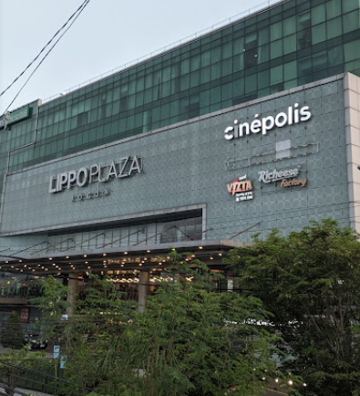

<!DOCTYPE html>
<html lang="en">
<head>
<base target="_top">
<meta charset="utf-8">
<meta name="viewport" content="width=device-width, initial-scale=1">

<title>Pasar Kota Yogyakarta</title>

<link rel="shortcut icon" type="image/x-icon" href="icon/favicon.ico" />

    <link rel="stylesheet" href="https://unpkg.com/leaflet@1.9.4/dist/leaflet.css" integrity="sha256-p4NxAoJBhIIN+hmNHrzRCf9tD/miZyoHS5obTRR9BMY=" crossorigin=""/>
    <script src="https://unpkg.com/leaflet@1.9.4/dist/leaflet.js" integrity="sha256-20nQCchB9co0qIjJZRGuk2/Z9VM+kNiyxNV1lvTlZBo=" crossorigin=""></script>

<style>
html, body {
height: 100%;
margin: 0;
}
.leaflet-container {
height: 500px;
width: 1000px;
max-width: 100%;
max-height: 100%;
}
</style>


</head>
<body>


<div id="map" style="width: 1000px; height: 500px;"></div>
<script>


<!-- ICON PASAR
	const MarketIcon = L.Icon.extend({
		options: {
			shadowUrl: 'icon/pasar.png',
			iconSize:     [25, 25],
			shadowSize:   [0, 0],

			shadowAnchor: [4, 62],
			popupAnchor:  [-1, -1]
		}
			});
			
	const PasarIcon = new MarketIcon({iconUrl: 'icon/pasar.png'});	
		
		
<!-- ICON Supermarket
	const SuperIcon = L.Icon.extend({
		options: {
			shadowUrl: 'icon/supermarket.png',
			iconSize:     [45.3, 34],
			shadowSize:   [0, 0],

			shadowAnchor: [4, 62],
			popupAnchor:  [-1, -1]
		}
			});
			
	const SupermarketIcon = new SuperIcon({iconUrl: 'icon/supermarket.png'});	
		
		
		
<!-- ICON Warung Sembako
	const SembakoIcon = L.Icon.extend({
		options: {
			shadowUrl: 'icon/sembako.png',
			iconSize:     [25, 25],
			shadowSize:   [0, 0],

			shadowAnchor: [4, 62],
			popupAnchor:  [-1, -1]
		}
			});
			
	const WarungSembakoIcon = new SembakoIcon({iconUrl: 'icon/sembako.png'});	
	
<!-- ICON Mall
	const MallIcon = L.Icon.extend({
		options: {
			shadowUrl: 'icon/mall.png',
			iconSize:     [35, 35],
			shadowSize:   [0, 0],

			shadowAnchor: [4, 62],
			popupAnchor:  [-1, -1]
		}
			});
			
	const MallIcons = new MallIcon({iconUrl: 'icon/mall.png'});	


<!-- LOKASI PASAR

const gruppasar = L.layerGroup();


const Giwangan = L.marker([-7.832148059405475, 110.38785236252808], {icon: PasarIcon}).addTo(gruppasar)
.bindPopup('<b>Pasar Giwangan</b><br />Jl. Imogiri Timur, Giwangan, Umbulharjo, Yogyakarta City, Special Region of Yogyakarta 55163<br> <br> <br> <br> ');

const Kotagede = L.marker([-7.828203133192917, 110.39976428882704], {icon: PasarIcon}).addTo(gruppasar)
.bindPopup('<b>Pasar Kotagede</b><br />Jl. Mentaok Raya, Purbayan, Kec. Kotagede, Kota Yogyakarta, Daerah Istimewa Yogyakarta 55173<br> <br> <br> ');

const Karangkajen = L.marker([-7.824481936075008, 110.37317767223472], {icon: PasarIcon}).addTo(gruppasar)
.bindPopup('<b>Pasar Telo Karangkajen</b><br />Jl. Sisingamangaraja, Brontokusuman, Kec. Mergangsan, Kota Yogyakarta, Daerah Istimewa Yogyakarta 55153<br> <br> <br> ');

const Patangpuluhan = L.marker([-7.809670578472699, 110.34977277895395], {icon: PasarIcon}).addTo(gruppasar)
.bindPopup('<b>Pasar Legi Patangpuluhan</b><br />Jl. Bugisan Selatan No.126, Patangpuluhan, Wirobrajan, Kota Yogyakarta, Daerah Istimewa Yogyakarta 55251<br> <br> <br> ');

const Ngasem = L.marker([-7.808096435305459, 110.35997183409091], {icon: PasarIcon}).addTo(gruppasar)
.bindPopup('<b>Pasar Ngasem</b><br />Jl. Polowijan No.11, Patehan, Kecamatan Kraton, Kota Yogyakarta, Daerah Istimewa Yogyakarta 55133<br> <br> <br> ');

const Kranggan = L.marker([-7.782523613900259, 110.36586200863339], {icon: PasarIcon}).addTo(gruppasar)
.bindPopup('<b>Pasar Kranggan</b><br />Jl. Poncowinatan, Gowongan, Kec. Jetis, Kota Yogyakarta, Daerah Istimewa Yogyakarta 55233<br> <br> <br> ');

const Karangwaru = L.marker([-7.77274633120853, 110.36156030532287], {icon: PasarIcon}).addTo(gruppasar)
.bindPopup('<b>Pasar Karangwaru</b><br />Jl. Marga Agung, Karangwaru, Tegalrejo, Yogyakarta City, Special Region of Yogyakarta 55241<br> <br> <br> ');

const Pingit = L.marker([-7.78303678167647, 110.3587272008249], {icon: PasarIcon}).addTo(gruppasar)
.bindPopup('<b>Pasar Pingit</b><br />Jl. Kyai Mojo No.9, Bumijo, Kec. Jetis, Kota Yogyakarta, Daerah Istimewa Yogyakarta 55231<br> <br> ');

const Senen = L.marker([-7.795640988025467, 110.36128043703172], {icon: PasarIcon}).addTo(gruppasar)
.bindPopup('<b>Pasar Senen</b><br />Jl. Jogonegaran No.13, Ngampilan, Gedong Tengen, Kota Yogyakarta, Daerah Istimewa Yogyakarta 55272<br> <br> <br> <br> ');

const Terban = L.marker([-7.781293305900863, 110.37233677482526], {icon: PasarIcon}).addTo(gruppasar)
.bindPopup('<b>Pasar Terban</b><br />Jl. C. Simanjuntak No.21, Terban, Kec. Gondokusuman, Kota Yogyakarta, Daerah Istimewa Yogyakarta 55223<br> <br> <br> ');

const Demangan = L.marker([-7.7811533206395715, 110.3882987010214], {icon: PasarIcon}).addTo(gruppasar)
.bindPopup('<b>Pasar Demangan</b><br />Jl. Affandi, Demangan, Kec. Gondokusuman, Kota Yogyakarta, Daerah Istimewa Yogyakarta 55221<br> <br> <br> ');

const Gedongkuning = L.marker([-7.8034416584603035, 110.39871915793981], {icon: PasarIcon}).addTo(gruppasar)
.bindPopup('<b>Pasar Gedongkuning</b><br />Jl. Kebun Raya, Rejowinangun, Kec. Kotagede, Kota Yogyakarta, Daerah Istimewa Yogyakarta 55171<br> <br> ');

const Serangan = L.marker([-7.800942692463796, 110.354195010953], {icon: PasarIcon}).addTo(gruppasar)
.bindPopup('<b>Pasar Serangan</b><br />Jl. R. E. Martadinata No.2, Pakuncen, Wirobrajan, Kota Yogyakarta, Daerah Istimewa Yogyakarta 55252<br>  <br> ');

const Pujokusuman = L.marker([-7.813727784099005, 110.36939547659286], {icon: PasarIcon}).addTo(gruppasar)
.bindPopup('<b>Pasar Pujokusuman</b><br />Jl. Kol. Sugiyono No.9, Keparakan, Kec. Mergangsan, Kota Yogyakarta, Daerah Istimewa Yogyakarta 55152<br> <br> ');

const Prawirotaman = L.marker([-7.820037452235211, 110.36815165335703], {icon: PasarIcon}).addTo(gruppasar)
.bindPopup('<b>Pasar Prawirotaman</b><br />Jl. Parangtritis No.103, Brontokusuman, Kec. Mergangsan, Kota Yogyakarta, Daerah Istimewa Yogyakarta 55153<br>  <br> <br> ');

const Sentul = L.marker([-7.80189010092394, 110.37751281758378], {icon: PasarIcon}).addTo(gruppasar)
.bindPopup('<b>Pasar Sentul</b><br />Jl. Sultan Agung No.52, Gunungketur, Pakualaman, Kota Yogyakarta, Daerah Istimewa Yogyakarta 55166<br> <br> ');

const Gading = L.marker([-7.814227816153964, 110.3629128619751], {icon: PasarIcon}).addTo(gruppasar)
.bindPopup('<b>Pasar Gading</b><br />Mantrijeron, Kota Yogyakarta, Daerah Istimewa Yogyakarta 55143<br> <br> <br> <br> ');

const Sanggrahan = L.marker([-7.7939123249486935, 110.3844618921514], {icon: PasarIcon}).addTo(gruppasar)
.bindPopup('<b>Pasar Sanggrahan</b><br />Semaki, Umbulharjo, Kota Yogyakarta, Daerah Istimewa Yogyakarta 55166<br> ');

const Beringharjo = L.marker([-7.798924563385409, 110.36569085470124], {icon: PasarIcon}).addTo(gruppasar)
.bindPopup('<b>Pasar Beringharjo</b><br />Jl. Margo Mulyo, Ngupasan, Kec. Gondomanan, Kota Yogyakarta, Daerah Istimewa Yogyakarta 55122<br> <br> <br> ');

const Lempuyangan = L.marker([-7.792264224179101, 110.37344070457986], {icon: PasarIcon}).addTo(gruppasar)
.bindPopup('<b>Pasar Lempuyangan</b><br />Ps. Lempuyangan, Tegal Panggung, Kec. Danurejan, Kota Yogyakarta, Daerah Istimewa Yogyakarta 55211<br> <br> <br> ');

const Waru = L.marker([-7.799988867358078, 110.36087032707522], {icon: PasarIcon}).addTo(gruppasar)
.bindPopup('<b>Pasar Waru</b><br />Gg. Asayo, Ngampilan, Kota Yogyakarta, Daerah Istimewa Yogyakarta 55261<br> <br> ');

const Sawo = L.marker([-7.805622732766252, 110.37055819555569], {icon: PasarIcon}).addTo(gruppasar)
.bindPopup('<b>Pasar Sawo</b><br />Gg. Pancasila, Prawirodirjan, Kec. Gondomanan, Kota Yogyakarta, Daerah Istimewa Yogyakarta 55121<br> ');

const Pathuk = L.marker([-7.796562653711533, 110.36228663967032], {icon: PasarIcon}).addTo(gruppasar)
.bindPopup('<b>Pasar Pathuk</b><br />Jl. Bhayangkara No.71, Ngupasan, Kec. Gondomanan, Kota Yogyakarta, Daerah Istimewa Yogyakarta 55261<br>  <br> <br> ');


const osm = L.tileLayer('https://tile.openstreetmap.org/{z}/{x}/{y}.png', {
	maxZoom: 19,
	attribution: '&copy; <a href="http://www.openstreetmap.org/copyright">OpenStreetMap</a> - Taufik Jati Saputra (Dinas Pertanian dan Pangan Kota Yogyakarta)'
});


const map = L.map('map', {
	center: [-7.8012707138265, 110.37111085791202],
	zoom: 13,
	layers: [osm, gruppasar]
});

const baseLayers = {
	'OpenStreetMap': osm,
	};

const overlays = {
	'Pasar': gruppasar
};


const layerControl = L.control.layers(baseLayers, overlays).addTo(map);


const SCBN1 = L.marker([-7.782230254002812, 110.35324250404405], {icon: SupermarketIcon})
.bindPopup('<b>Superindo Godean</b><br />Jl. HOS Cokroaminoto No.01, Tegalrejo, Kec. Tegalrejo, Kota Yogyakarta, Daerah Istimewa Yogyakarta 55244<br><br>  ');

const AlfamidiTritunggal = L.marker([-7.824953444336353, 110.3772245432201], {icon: SupermarketIcon})
.bindPopup('<b>Alfamidi Tritunggal</b><br />Jl. Tritunggal No.41, Sorosutan, Kec. Umbulharjo, Kota Yogyakarta, Daerah Istimewa Yogyakarta 55162<br><br> <br> <br> <br> <br> ');

const AlfamartGiwangan = L.marker([-7.831323151952741, 110.38987289715028], {icon: SupermarketIcon})
.bindPopup('<b>Alfamart Giwangan</b><br />Jalan Imogiri Timur No.210, Rt.33/11, Giwangan, Kec. Umbulharjo, Kota Yogyakarta, Daerah Istimewa Yogyakarta 55163<br><br> ');

const AlfamartNgeksigondo = L.marker([-7.819573684618276, 110.39749966232448], {icon: SupermarketIcon})
.bindPopup('<b>Alfamart Ngeksigondo</b><br />Prenggan, Kotagede, Kota Yogyakarta, Daerah Istimewa Yogyakarta 55172<br><br> ');


const IndomaretGiwangan = L.marker([-7.834347838399185, 110.39095477525372], {icon: SupermarketIcon})
.bindPopup('<b>Indomaret Giwangan</b><br />Sebelah Utara Terminal Bus Giwangan, Giwangan, Kota Yogyakarta, Daerah Istimewa Yogyakarta<br><br> <br> ');

const IndomaretFreshPramuka = L.marker([-7.825452586565315, 110.39021011169088], {icon: SupermarketIcon})
.bindPopup('<b>Indomaret Fresh Pramuka</b><br />Jl. Pramuka No.113, Giwangan, Kec. Umbulharjo, Kota Yogyakarta, Daerah Istimewa Yogyakarta 55161<br><br> <br> <br> ');

const IndomaretGedongKuning112 = L.marker([-7.812401594431205, 110.4020037177982], {icon: SupermarketIcon})
.bindPopup('<b>Indomaret Gedong Kuning 112</b><br />Jl. Gedongkuning Selatan No.116, Rejowinangun, Kec. Kotagede, Kota Yogyakarta, Daerah Istimewa Yogyakarta 55171<br><br> ');

const IndomaretPurbayan = L.marker([-7.8193542327754715, 110.40144794491802], {icon: SupermarketIcon})
.bindPopup('<b>Indomaret</b><br />Jl. Gedongkuning Selatan No.5, Purbayan, Kec. Kotagede, Kota Yogyakarta, Daerah Istimewa Yogyakarta 55171<br><br> <br> ');


const SuperindoKotagede = L.marker([-7.819172123664958, 110.39622114334304], {icon: SupermarketIcon})
.bindPopup('<b>Superindo Kotagede</b><br />Jl. Ngeksigondo No.7, RT.009/RW.02, Prenggan, Kec. Kotagede, Kota Yogyakarta, Daerah Istimewa Yogyakarta 55172<br><br> <br> <br> <br> ');

const IndomaretPerintisKemerdekaan = L.marker([-7.817075830111282, 110.38459411632846], {icon: SupermarketIcon})
.bindPopup('<b>Indomaret Perintis Kemerdekaan</b><br />Jl. Menteri Supeno, Pandeyan, Kec. Umbulharjo, Kota Yogyakarta, Daerah Istimewa Yogyakarta 55161<br><br> ');

const IndomaretMenteriSupeno = L.marker([-7.81627886073214, 110.38130420377388], {icon: SupermarketIcon})
.bindPopup('<b>Indomaret Menteri Supeno Yogyakarta</b><br />Jl. Menteri Supeno No.79, Pandeyan, Kec. Umbulharjo, Kota Yogyakarta, Daerah Istimewa Yogyakarta 55161<br><br> ');

const MirotaKampusMenteriSupeno = L.marker([-7.816424731134159, 110.37945849160933], {icon: SupermarketIcon})
.bindPopup('<b>Mirota Kampus Menteri Supeno</b><br />Jl. Menteri Supeno No.38, Sorosutan, Kec. Umbulharjo, Kota Yogyakarta, Daerah Istimewa Yogyakarta 55162<br><br> <br> ');

const IndomaretBrigjenKatamso = L.marker([-7.807128985144335, 110.36933407388999], {icon: SupermarketIcon})
.bindPopup('<b>Indomaret Brigjen Katamso</b><br />Jl. Brigjen Katamso No.97 A, Prawirodirjan, Kec. Gondomanan, Kota Yogyakarta, Daerah Istimewa Yogyakarta 55121<br><br> ');

const LogMartMayjendSutoyo = L.marker([-7.81441466214848, 110.36638049543426], {icon: SupermarketIcon})
.bindPopup('<b>LogMart Mayjend Sutoyo</b><br />Jl. Mayjend Sutoyo, Mantrijeron, Kec. Mantrijeron, Kota Yogyakarta, Daerah Istimewa Yogyakarta 55143<br><br> <br> ');

const IndomaretWahidHasyim = L.marker([-7.80526761191246, 110.35624790309231], {icon: SupermarketIcon})
.bindPopup('<b>Indomaret Wahid Hasyim</b><br />Jl. KH Wahid Hasyim, Notoprajan, Ngampilan, Kota Yogyakarta, Daerah Istimewa Yogyakarta 55262<br><br> ');

const IndomaretAhmadDahlan = L.marker([-7.8011091011052605, 110.35949305337299], {icon: SupermarketIcon})
.bindPopup('<b>Indomaret KH. Ahmad Dahlan</b><br />Jl. KH. Ahmad Dahlan No.76, Ngampilan, Kota Yogyakarta, Daerah Istimewa Yogyakarta 55261<br><br> <br> <br> ');

const TokoProgo = L.marker([-7.7982959980140265, 110.36883296247919], {icon: SupermarketIcon})
.bindPopup('<b>Toko Progo</b><br />Jl. Suryotomo No.29, Ngupasan, Kec. Gondomanan, Kota Yogyakarta, Daerah Istimewa Yogyakarta 55122<br><br> <br> <br> ');

const IndomaretHayamWuruk = L.marker([-7.795546260888122, 110.37275361473148], {icon: SupermarketIcon})
.bindPopup('<b>Indomaret Hayam Wuruk</b><br />Jl. Hayam Wuruk No.16, Bausasran, Kec. Danurejan, Kota Yogyakarta, Daerah Istimewa Yogyakarta 55212<br><br> <br> ');

const IndomaretTunjungBaru = L.marker([-7.794035484829633, 110.379464946627], {icon: SupermarketIcon})
.bindPopup('<b>Indomaret Tunjung Baru</b><br />Jl. Tunjung Baru No.14, Baciro, Kec. Gondokusuman, Kota Yogyakarta, Daerah Istimewa Yogyakarta 55225<br><br> ');

const AlfamartAMSangaji = L.marker([-7.773320415590534, 110.36802095029546], {icon: SupermarketIcon})
.bindPopup('<b>Alfamart AM Sangaji</b><br />Jl. A.M. Sangaji Kel No.59, Cokrodiningratan, Kec. Jetis, Kota Yogyakarta, Daerah Istimewa Yogyakarta 55233<br><br> ');

const CircleKAMSangaji = L.marker([-7.7741981427497535, 110.3679948781869], {icon: SupermarketIcon})
.bindPopup('<b>Circle K AM Sangaji</b><br />Jl. A.M. Sangaji, Cokrodiningratan, Kec. Jetis, Kota Yogyakarta, Daerah Istimewa Yogyakarta 55233<br><br> ');

const IndomaretAMSangaji68 = L.marker([-7.774614853726599, 110.36815708750756], {icon: SupermarketIcon})
.bindPopup('<b>Indomaret AM Sangaji 68</b><br />Jl. A.M. Sangaji No.68 B, Cokrodiningratan, Kec. Jetis, Kota Yogyakarta, Daerah Istimewa Yogyakarta 55233<br><br> ');

const MannaKampusSimanjuntak = L.marker([-7.7763198513095935, 110.37443055394671], {icon: SupermarketIcon})
.bindPopup('<b>Manna Kampus (Mirota Kampus) Simanjuntak</b><br />Jl. C. Simanjuntak No.70, Terban, Kec. Gondokusuman, Kota Yogyakarta, Daerah Istimewa Yogyakarta 55223<br><br> <br> ');

const Citrouli = L.marker([-7.78299786343787, 110.38732438206314], {icon: SupermarketIcon})
.bindPopup('<b>Citrouli</b><br />Jl. Urip Sumoharjo No.103, Klitren, Kec. Gondokusuman, Kota Yogyakarta, Daerah Istimewa Yogyakarta 55222<br><br> ');

const IndomaretUripSumoharjo = L.marker([-7.78297006831418, 110.38315518137314], {icon: SupermarketIcon})
.bindPopup('<b>Indomaret Urip Sumoharjo</b><br />Jl. Urip Sumoharjo, Klitren, Kec. Gondokusuman, Kota Yogyakarta, Daerah Istimewa Yogyakarta<br><br> ');

const Gardena = L.marker([-7.783164671002617, 110.38118690482466], {icon: SupermarketIcon})
.bindPopup('<b>Gardena Department Store & Supermarket</b><br />Jl. Urip Sumoharjo No.40, Klitren, Kec. Gondokusuman, Kota Yogyakarta, Daerah Istimewa Yogyakarta 55222<br><br> ');

const SuperindoUripSumoharjo = L.marker([-7.783348314881294, 110.38254861149873], {icon: SupermarketIcon})
.bindPopup('<b>Superindo Urip Sumoharjo</b><br />Jl. Urip Sumoharjo No.38A, Klitren, Kec. Gondokusuman, Kota Yogyakarta, Daerah Istimewa Yogyakarta 55222<br><br> ');

const AlfamidiGondokusuman = L.marker([-7.78346983732859, 110.37930291976546], {icon: SupermarketIcon})
.bindPopup('<b>Alfamidi Gondokusuman</b><br />Jl. Dr. Wahidin Sudirohusodo, Klitren, Kec. Gondokusuman, Kota Yogyakarta, Daerah Istimewa Yogyakarta 55224<br><br> ');

const IndomaretWahidinNo60 = L.marker([-7.783804234074133, 110.37924868409418], {icon: SupermarketIcon})
.bindPopup('<b>Indomaret Wahidin No 60</b><br />Jl. Dr. Wahidin Sudirohusodo No.60-56, Klitren, Kec. Gondokusuman, Kota Yogyakarta, Daerah Istimewa Yogyakarta 55222<br><br> ');

const CircleKDRWahidinKorner = L.marker([-7.786651194235903, 110.37877732139337], {icon: SupermarketIcon})
.bindPopup('<b>Circle K DR. Wahidin (Korner)</b><br />Klitren, Gondokusuman, Kota Yogyakarta, Daerah Istimewa Yogyakarta 55222<br><br> ');

const AlfamartTimoho = L.marker([-7.787873583676552, 110.39462152656216], {icon: SupermarketIcon})
.bindPopup('<b>Alfamart Timoho</b><br />Jl. Timoho, Demangan, Kec. Gondokusuman, Kota Yogyakarta, Daerah Istimewa Yogyakarta 55221<br><br> ');

const IndomaretTimoho = L.marker([-7.790163324532166, 110.39353925820468], {icon: SupermarketIcon})
.bindPopup('<b>Indomaret Timoho</b><br />Jl. Timoho No.111, Baciro, Kec. Gondokusuman, Kota Yogyakarta, Daerah Istimewa Yogyakarta 55225<br><br> ');

const CircleKTimoho = L.marker([-7.790406347763605, 110.39331162278098], {icon: SupermarketIcon})
.bindPopup('<b>Circle K Timoho</b><br />Jl. Timoho, Baciro, Kec. Gondokusuman, Kota Yogyakarta, Daerah Istimewa Yogyakarta 55225<br><br> ');

const AlfamidiTimoho = L.marker([-7.7904767702794535, 110.39345914427847], {icon: SupermarketIcon})
.bindPopup('<b>Alfamidi Timoho</b><br />Jl. Timoho No.313C, RW.02, Baciro, Kec. Gondokusuman, Kota Yogyakarta, Daerah Istimewa Yogyakarta 55165<br><br> ');

const IndomaretWirosaban = L.marker([-7.824705092132069, 110.37763583698771], {icon: SupermarketIcon})
.bindPopup('<b>Indomaret Wirosaban</b><br />Jl. Tritunggal No.3, Sorosutan, Kec. Umbulharjo, Kota Yogyakarta, Daerah Istimewa Yogyakarta 55162<br><br> <br> <br> <br> ');

const PamelaDelapan = L.marker([-7.824410592187086, 110.37804199326499], {icon: SupermarketIcon})
.bindPopup('<b>Pamela Delapan</b><br />Jl. Lowanu No.88, Sorosutan, Kec. Umbulharjo, Kota Yogyakarta, Daerah Istimewa Yogyakarta 55162<br><br> ');

const IndomaretLowanu = L.marker([-7.82123492525916, 110.3768247508773], {icon: SupermarketIcon})
.bindPopup('<b>Indomaret Lowanu</b><br />Jl. Lowanu No.56b, Sorosutan, Kec. Umbulharjo, Kota Yogyakarta, Daerah Istimewa Yogyakarta 55171<br><br> ');

const AlfamartLowanu = L.marker([-7.8203223141342875, 110.37672283349333], {icon: SupermarketIcon})
.bindPopup('<b>Alfamart Lowanu</b><br />Jl. Lowanu, Sorosutan, Kec. Umbulharjo, Kota Yogyakarta, Daerah Istimewa Yogyakarta 55162<br><br> ');

const PamellaEmpat = L.marker([-7.824258913474415, 110.39012408351043], {icon: SupermarketIcon})
.bindPopup('<b>Pamella Empat</b><br />Jl. Pramuka No.84, Giwangan, Kec. Umbulharjo, Kota Yogyakarta, Daerah Istimewa Yogyakarta 55163<br><br> ');

const IndomaretCemara = L.marker([-7.823728046910948, 110.3904043231194], {icon: SupermarketIcon})
.bindPopup('<b>Indomaret Cemara</b><br />Jl. Pramuka No.37, Pandeyan, Kec. Umbulharjo, Kota Yogyakarta, Daerah Istimewa Yogyakarta 55161<br><br> ');

const AlfamartGambiran = L.marker([-7.821688003688824, 110.39050374979564], {icon: SupermarketIcon})
.bindPopup('<b>Alfamart Gambiran</b><br />Jl. Gambiran No.91-105, Pandeyan, Kec. Umbulharjo, Kota Yogyakarta, Daerah Istimewa Yogyakarta 55161<br><br> ');

const IndomaretSorogenen = L.marker([-7.824855835260943, 110.38123546660977], {icon: SupermarketIcon})
.bindPopup('<b>Indomaret Sorogenen</b><br />Jl. Sorogenen No.26b, Sorosutan, Kec. Umbulharjo, Kota Yogyakarta, Daerah Istimewa Yogyakarta 55162<br><br> ');

const IndomaretGambiran = L.marker([-7.816132563570342, 110.39103775695047], {icon: SupermarketIcon})
.bindPopup('<b>Indomaret Gambiran</b><br />Pandeyan, Umbulharjo, Yogyakarta City, Special Region of Yogyakarta 55161<br><br> ');

const AlfamidiKiPenjawi = L.marker([-7.8134627197481095, 110.39607261707702], {icon: SupermarketIcon})
.bindPopup('<b>Alfamidi Ki Penjawi</b><br />Jl. Ki Penjawi No.28, Rejowinangun, Kec. Kotagede, Kota Yogyakarta, Daerah Istimewa Yogyakarta 55171<br><br> ');

const IndomaretRejowinangun = L.marker([-7.810642838222685, 110.3988771587572], {icon: SupermarketIcon})
.bindPopup('<b>Indomaret Rejowinangun</b><br />Jl. Rejowinangun No.12, Rejowinangun, Kec. Kotagede, Kota Yogyakarta, Daerah Istimewa Yogyakarta 55171<br><br> ');

const IndomaretVeteran23 = L.marker([-7.803843665732565, 110.39500491411876], {icon: SupermarketIcon})
.bindPopup('<b>Indomaret Veteran 23</b><br />Jl. Veteran No.23, Muja Muju, Kec. Umbulharjo, Kota Yogyakarta, Daerah Istimewa Yogyakarta 55164<br><br> ');

const IndomaretBabaran = L.marker([-7.811890722813216, 110.38854755951222], {icon: SupermarketIcon})
.bindPopup('<b>Indomaret Babaran</b><br />Jl. Babaran No.77, Pandeyan, Kec. Umbulharjo, Kota Yogyakarta, Daerah Istimewa Yogyakarta 55161<br><br> ');

const PamellaDuaSwalayan = L.marker([-7.813279234907167, 110.38641774145462], {icon: SupermarketIcon})
.bindPopup('<b>Pamella Dua Swalayan</b><br />Jl. Pandeyan No.16, Pandeyan, Kec. Umbulharjo, Kota Yogyakarta, Daerah Istimewa Yogyakarta 55161<br>(0274)388277<br><br> ');

const PeniSwalayan = L.marker([-7.8123911604305745, 110.3861312117519], {icon: SupermarketIcon})
.bindPopup('<b>Peni Swalayan</b><br />Gg. Empu Sedah No.797, Pandeyan, Kec. Umbulharjo, Kota Yogyakarta, Daerah Istimewa Yogyakarta 55161<br><br> ');

const AlfamartGlagahsari = L.marker([-7.810678285132472, 110.38727240023366], {icon: SupermarketIcon})
.bindPopup('<b>Alfamart Glagahsari</b><br />Jl. Glagahsari No.111, Warungboto, Umbulharjo, Kota Yogyakarta, Daerah Istimewa Yogyakarta 55164<br><br> ');

const AlfamartGedongkuning = L.marker([-7.806618440894326, 110.40204700954754], {icon: SupermarketIcon})
.bindPopup('<b>Alfamart Gedongkuning</b><br />Jl. Gedongkuning Kel No.60, RT.08/RW.03, Rejowinangun, Kec. Kotagede, Kota Yogyakarta, Daerah Istimewa Yogyakarta 55171<br><br> ');

const PamellaSupermarket = L.marker([-7.801913009643422, 110.39104635219945], {icon: SupermarketIcon})
.bindPopup('<b>Pamella Supermarket</b><br />Jl. Kusumanegara No.141, Muja Muju, Kec. Umbulharjo, Kota Yogyakarta, Daerah Istimewa Yogyakarta 55165<br>(0274)515276<br><br> ');

const SuperindoSultanAgung = L.marker([-7.801816178540466, 110.37289138478545], {icon: SupermarketIcon})
.bindPopup('<b>Superindo Sultan Agung</b><br />Jl. Sultan Agung No.10, Wirogunan, Kec. Mergangsan, Kota Yogyakarta, Daerah Istimewa Yogyakarta 55151<br>(0274)384118<br><br> ');

const AlfamartAhmadDahlan = L.marker([-7.801084064621501, 110.35929997422701], {icon: SupermarketIcon})
.bindPopup('<b>Alfamart Jalan Ahmad Dahlan</b><br />Jl. KH. Ahmad Dahlan No.78, RW.13, Ngampilan, Kota Yogyakarta, Daerah Istimewa Yogyakarta 55261<br><br> ');

const IndomaretWirobrajan = L.marker([-7.800789489460027, 110.3486820062458], {icon: SupermarketIcon})
.bindPopup('<b>Indomaret Wirobrajan</b><br />Jl. R. E. Martadinata No.116, Pakuncen, Wirobrajan, Kota Yogyakarta, Daerah Istimewa Yogyakarta 55253<br><br> ');

const SariJaya = L.marker([-7.800886226262284, 110.3497603], {icon: SupermarketIcon})
.bindPopup('<b>Sari Jaya Store</b><br />Jl. R. E. Martadinata, Pakuncen, Wirobrajan, Kota Yogyakarta, Daerah Istimewa Yogyakarta 55253<br>(0274)618083<br><br> ');

const AlfamidiREMartadinata = L.marker([-7.801079835685554, 110.34964927274567], {icon: SupermarketIcon})
.bindPopup('<b>Alfamidi RE Martadinata</b><br />Jl. R. E. Martadinata No.57, Wirobrajan, Kota Yogyakarta, Daerah Istimewa Yogyakarta 55252<br>(0274)618083<br><br> ');

const IndomaretPiereTendean = L.marker([-7.804392489281506, 110.35096215496203], {icon: SupermarketIcon})
.bindPopup('<b>Indomaret Piere Tendean</b><br />Jl. Kapten Piere Tendean No.36, Wirobrajan, Kota Yogyakarta, Daerah Istimewa Yogyakarta 55252<br>0816500580<br><br> ');

const IndomaretKricak = L.marker([-7.77484772190344, 110.36104969695445], {icon: SupermarketIcon})
.bindPopup('<b>Indomaret Kricak</b><br />Jl. Magelang Jl. Jatimulyo No.105, Kricak, Kec. Tegalrejo, Kota Yogyakarta, Daerah Istimewa Yogyakarta 55242<br>(021)1500580<br><br> ');

const IndomaretJambon = L.marker([-7.769836421980016, 110.35686817667518], {icon: SupermarketIcon})
.bindPopup('<b>Indomaret Jambon</b><br />Jl. Jambon No.12, Kricak, Kec. Tegalrejo, Kota Yogyakarta, Daerah Istimewa Yogyakarta 55242<br><br> ');

const ProgoMartJambon = L.marker([-7.768219271213575, 110.35484997046738], {icon: SupermarketIcon})
.bindPopup('<b>Progo Mart</b><br />Jl. Jambon, Kragilan, Kricak, Kec. Tegalrejo, Kabupaten Sleman, Daerah Istimewa Yogyakarta 55242<br><br> ');

const IndomaretFreshJetis = L.marker([-7.780725362605196, 110.36102818427155], {icon: SupermarketIcon})
.bindPopup('<b>Indomaret Fresh Jetis</b><br />Jl. Pakuningratan No.7, Cokrodiningratan, Kec. Jetis, Kota Yogyakarta, Daerah Istimewa Yogyakarta 55233<br>(021)1500580<br><br> ');

const IndomaretSagan = L.marker([-7.778621641701122, 110.37960506867685], {icon: SupermarketIcon})
.bindPopup('<b>Indomaret Sagan</b><br />Jl. Prof. Dr. Ir. Herman Johannes No.988, Terban, Kec. Gondokusuman, Kota Yogyakarta, Daerah Istimewa Yogyakarta 55223<br>0816500580<br><br> ');

const IndomaretMangkubumi = L.marker([-7.787739382751159, 110.36632150247422], {icon: SupermarketIcon})
.bindPopup('<b>Indomaret Mangkubumi</b><br />Jl. P. Mangkubumi No.12 A, Sosromenduran, Gedong Tengen, Kota Yogyakarta, Daerah Istimewa Yogyakarta 55271<br>(021)1500580<br><br> ');

const AlfamartGowongan = L.marker([-7.7871846481052245, 110.36341678553099], {icon: SupermarketIcon})
.bindPopup('<b>Alfamart Gowongan</b><br/>Jl. Gowongan Kidul No.46, Gowongan, Kec. Jetis, Kota Yogyakarta, Daerah Istimewa Yogyakarta 55233<br><br> ');

const AlfamartBumijo = L.marker([-7.787214545372574, 110.35772866911353], {icon: SupermarketIcon})
.bindPopup('<b>Alfamart Bumijo</b><br/>Jl. Tentara Rakyat Mataram No.8, RW.001, Bumijo, Kec. Jetis, Kota Yogyakarta, Daerah Istimewa Yogyakarta 55231<br><br> ');

const AlfamartPembelaTanahAir = L.marker([-7.790153040759615, 110.35481864246827], {icon: SupermarketIcon})
.bindPopup('<b>Alfamart Pembela Tanah Air</b><br/>Jl. Pembela Tanah Air No.9, RW.001, Tegalrejo, Kec. Tegalrejo, Kota Yogyakarta, Daerah Istimewa Yogyakarta 55244<br><br> ');

const IndomaretHOSCokroaminoto = L.marker([-7.784623126225793, 110.35245125646959], {icon: SupermarketIcon})
.bindPopup('<b>Indomaret HOS Cokroaminoto 209</b><br/>Jl. HOS Cokroaminoto No.209, Tegalrejo, Kec. Tegalrejo, Kota Yogyakarta, Daerah Istimewa Yogyakarta 55244<br><br> ');

const AlfaMidiSuper = L.marker([-7.791961743449459, 110.35330989975603], {icon: SupermarketIcon})
.bindPopup('<b>Alfa Midi Super</b><br/>Jl. HOS Cokroaminoto No.149, Tegalrejo, Kec. Tegalrejo, Kota Yogyakarta, Daerah Istimewa Yogyakarta 55244<br>081380766209<br><br> ');

const IndomaretHosCokroaminoto91 = L.marker([-7.794462390631295, 110.35327234881113], {icon: SupermarketIcon})
.bindPopup('<b>Indomaret Hos Cokroaminoto</b><br/>Jl. HOS Cokroaminoto No.91, Pakuncen, Wirobrajan, Kota Yogyakarta, Daerah Istimewa Yogyakarta 55253<br>0816500580<br><br> ');

const IndomaretPakuncen = L.marker([-7.796219821508964, 110.35266218557423], {icon: SupermarketIcon})
.bindPopup('<b>Indomaret Pakuncen</b><br/>Jl. HOS Cokroaminoto, Pakuncen, Wirobrajan, Kota Yogyakarta, Daerah Istimewa Yogyakarta 55253<br><br> ');

const IndomaretSugengJeroni = L.marker([-7.812760361050444, 110.35409419425845], {icon: SupermarketIcon})
.bindPopup('<b>Indomaret Sugeng Jeroni</b><br/>Jl. Sugeng Jeroni No.27, Gedongkiwo, Kec. Mantrijeron, Kota Yogyakarta, Daerah Istimewa Yogyakarta 55142<br><br> ');

const IndomaretBantul = L.marker([-7.817817219688879, 110.3557162006542], {icon: SupermarketIcon})
.bindPopup('<b>Indomaret Bantul</b><br/>Jl. Bantul No.60, Gedongkiwo, Kec. Mantrijeron, Kota Yogyakarta, Daerah Istimewa Yogyakarta 55142<br>(021)1500580<br><br> ');

const AlfamidiSupermarket = L.marker([-7.820278680087832, 110.35568872298087], {icon: SupermarketIcon})
.bindPopup('<b>Alfamidi Supermarket</b><br/>Jl. Bantul, Gedongkiwo, Kec. Mantrijeron, Kota Yogyakarta, Daerah Istimewa Yogyakarta 55142<br><br> ');

const SuperindoBantul = L.marker([-7.820491832930661, 110.35561237711066], {icon: SupermarketIcon})
.bindPopup('<b>Superindo Bantul</b><br/>Jl. Bantul, Gedongkiwo, Kec. Mantrijeron, Kota Yogyakarta, Daerah Istimewa Yogyakarta<br><br> ');

const MagaSupermarket = L.marker([-7.817921909600314, 110.36202132435702], {icon: SupermarketIcon})
.bindPopup('<b>Maga Supermarket</b><br/>Jl. DI Panjaitan No.54, Suryodiningratan, Kec. Mantrijeron, Kota Yogyakarta, Daerah Istimewa Yogyakarta 55141<br>08170253531<br><br> ');

const CircleKPrawirotaman = L.marker([-7.821040722061241, 110.3678330910593], {icon: SupermarketIcon})
.bindPopup('<b>Circle K Prawirotaman</b><br/>Jl. Parangtritis No.100, Mantrijeron, Kec. Mantrijeron, Kota Yogyakarta, Daerah Istimewa Yogyakarta 55143<br>(021)1500888<br><br> ');

const LawsonParangtritis = L.marker([-7.821224289374742, 110.3680404538341], {icon: SupermarketIcon})
.bindPopup('<b>Lawson Parangtritis</b><br/>Jl. Parangtritis No.115B, Brontokusuman, Kec. Mergangsan, Kota Yogyakarta, Daerah Istimewa Yogyakarta 55143<br><br> ');

const AlfamidiParangtritis = L.marker([-7.8266456415141015, 110.36742287915467], {icon: SupermarketIcon})
.bindPopup('<b>Alfamidi Parangtritis</b><br/>Jl. Parangtritis No.180, Mantrijeron, Kec. Mantrijeron, Kota Yogyakarta, Daerah Istimewa Yogyakarta 55188<br>081345291892<br><br> ');

const PurnamaSwalayanKarangkajen = L.marker([-7.823771847250949, 110.37315795044768], {icon: SupermarketIcon})
.bindPopup('<b>Purnama Swalayan Karangkajen</b><br/>Jl. Sisingamangaraja No.82, Brontokusuman, Kec. Mergangsan, Kota Yogyakarta, Daerah Istimewa Yogyakarta 55153<br>(0274)450325<br><br> ');

const AlfamartSisingamangaraja = L.marker([-7.819120135204874, 110.37304250080759], {icon: SupermarketIcon})
.bindPopup('<b>Alfamart Sisingamangaraja</b><br/>Jl. Sisingamangaraja No. 80,Rt:26 Rw:14, Kel, Brontokusuman, Mergangsan, Kota Yogyakarta, Daerah Istimewa Yogyakarta 55153<br>1500959<br><br> ');

const IndomaretSisingamangaraja = L.marker([-7.817239677558139, 110.37299602348361], {icon: SupermarketIcon})
.bindPopup('<b>Indomaret Sisingamangaraja</b><br/>Jl. Sisingamangaraja, Brontokusuman, Kec. Mergangsan, Kota Yogyakarta, Daerah Istimewa Yogyakarta 55153<br>(0274)373983<br><br> ');

const KarumaMart = L.marker([-7.813872721059891, 110.37628169286943], {icon: SupermarketIcon})
.bindPopup('<b>Karuma Mart</b><br/>Jl. Taman Siswa No.154, Wirogunan, Kec. Mergangsan, Kota Yogyakarta, Daerah Istimewa Yogyakarta 55151<br>(0274)371044<br><br> ');

const AlfamidiTamanSiswa2 = L.marker([-7.806920500160932, 110.37744384315329], {icon: SupermarketIcon})
.bindPopup('<b>Alfamidi Taman Siswa 2</b><br/>Jl. Taman Siswa No.52, Wirogunan, Kec. Mergangsan, Kota Yogyakarta, Daerah Istimewa Yogyakarta 55151<br>082134126142<br><br> ');

const IndomaretBatikan = L.marker([-7.81335667432778, 110.38291087390415], {icon: SupermarketIcon})
.bindPopup('<b>Indomaret Batikan</b><br/>Jl. Batikan No.80, Pandeyan, Kec. Umbulharjo, Kota Yogyakarta, Daerah Istimewa Yogyakarta 55161<br><br> ');

const IndomaretFreshYosSudarso = L.marker([-7.788677004603468, 110.3744609077811], {icon: SupermarketIcon})
.bindPopup('<b>Indomaret Fresh Yos Sudarso</b><br/>Jl. Yos Sudarso No.21, Kotabaru, Kec. Gondokusuman, Kota Yogyakarta, Daerah Istimewa Yogyakarta 55224<br><br> ');

const AlfamartDrSutomo = L.marker([-7.7932290326331195, 110.37805260597496], {icon: SupermarketIcon})
.bindPopup('<b>Alfamart Dr Sutomo</b><br/>Jl. Doktor Sutomo No.54b, Bausasran, Kec. Gondokusuman, Kota Yogyakarta, Daerah Istimewa Yogyakarta 55211<br><br> ');

const LawsonDRSoetomo = L.marker([-7.794002449556706, 110.37801511123558], {icon: SupermarketIcon})
.bindPopup('<b>Lawson DR Soetomo</b><br/>Jl. Tunjung Baru No.2, Baciro, Kec. Gondokusuman, Kota Yogyakarta, Daerah Istimewa Yogyakarta 55225<br><br> ');

const IndomaretDRSoetomo = L.marker([-7.794994859635918, 110.37768369260803], {icon: SupermarketIcon})
.bindPopup('<b>Indomaret DR Soetomo</b><br/>Jl. Doktor Sutomo No.21, Bausasran, Kec. Danurejan, Kota Yogyakarta, Daerah Istimewa Yogyakarta 55211<br>0816500580<br><br> ');

const IndomaretGondokusuman = L.marker([-7.797549375251092, 110.37942022415133], {icon: SupermarketIcon})
.bindPopup('<b>Indomaret Gondokusuman</b><br/>Jl. Gayam No.20, Baciro, Kec. Gondokusuman, Kota Yogyakarta, Daerah Istimewa Yogyakarta 55225<br>(0274)9361172<br><br> ');

const AlfamartMojo = L.marker([-7.790676569911482, 110.38649578584983], {icon: SupermarketIcon})
.bindPopup('<b>Alfamart Mojo</b><br/>Jl. Mojo No.12, RW.02, Baciro, Kec. Gondokusuman, Kota Yogyakarta, Daerah Istimewa Yogyakarta 55225<br><br> ');

const IndomaretMojo = L.marker([-7.790000077779903, 110.38653144220844], {icon: SupermarketIcon})
.bindPopup('<b>Indomaret Mojo</b><br/>Jl. Mojo II No.22, Baciro, Kec. Gondokusuman, Kota Yogyakarta, Daerah Istimewa Yogyakarta 55225<br><br> ');

const IndomaretCendana = L.marker([-7.7994188138796305, 110.38483799293766], {icon: SupermarketIcon})
.bindPopup('<b>Indomaret Cendana</b><br/>Jl. Cendana No.36, Semaki, Kec. Umbulharjo, Kota Yogyakarta, Daerah Istimewa Yogyakarta 55166<br>08112834972<br><br> ');

const CircleKPasarKembang = L.marker([-7.789942815684518, 110.36483846601645], {icon: SupermarketIcon})
.bindPopup('<b>Circle K Pasar Kembang</b><br/>Jl. Ps. Kembang, Sosromenduran, Gedong Tengen, Kota Yogyakarta, Daerah Istimewa Yogyakarta<br>08176903635<br><br> ');

const AlfamartPasarKembang = L.marker([-7.789662852560835, 110.36136579078888], {icon: SupermarketIcon})
.bindPopup('<b>Alfamart Pasar Kembang</b><br/>Jl. Ps. Kembang, Sosromenduran, Gedong Tengen, Kota Yogyakarta, Daerah Istimewa Yogyakarta 55271<br>1500959<br><br> ');

const AlfamidiPringgokusuman = L.marker([-7.790557639483826, 110.36184921617635], {icon: SupermarketIcon})
.bindPopup('<b>Alfamidi Pringgokusuman</b><br/>Jl. Gandekan No.90, Sosromenduran, Gedong Tengen, Kota Yogyakarta, Daerah Istimewa Yogyakarta 55271<br><br> ');

const IndomaretBhayangkara = L.marker([-7.799620834518413, 110.36219759304169], {icon: SupermarketIcon})
.bindPopup('<b>Indomaret Bhayangkara</b><br/>Jl. Bhayangkara No.24, Ngupasan, Kec. Gondomanan, Kota Yogyakarta, Daerah Istimewa Yogyakarta 55122<br>(0274)513401<br><br> ');

const IndomaretKHWahidHasyim = L.marker([-7.804092716662779, 110.35667161072757], {icon: SupermarketIcon})
.bindPopup('<b>Indomaret KH Wahid Hasyim</b><br/>Jl. KH Wahid Hasyim No.55 B, Notoprajan, Ngampilan, Kota Yogyakarta, Daerah Istimewa Yogyakarta 55262<br>(0274)386698<br><br> ');

const IndomaretLetjendSuprapto = L.marker([-7.796023703154037, 110.35674722753981], {icon: SupermarketIcon})
.bindPopup('<b>Indomaret Letjend Suprapto</b><br/>Jl. Letjen Suprapto No.79B, Ngampilan, Kota Yogyakarta, Daerah Istimewa Yogyakarta 55261<br><br> ');

const IndomaretYudonegaran = L.marker([-7.803469668406823, 110.36744987076221], {icon: SupermarketIcon})
.bindPopup('<b>Indomaret Yudonegaran</b><br/>Jl. Ibu Ruswo No.33-47, Prawirodirjan, Kec. Gondomanan, Kota Yogyakarta, Daerah Istimewa Yogyakarta 55121<br><br> ');

const IndomaretKatamso = L.marker([-7.807813859445174, 110.36900393173265], {icon: SupermarketIcon})
.bindPopup('<b>Indomaret Katamso</b><br/>Jl. Brigjen Katamso, Keparakan, Kec. Mergangsan, Kota Yogyakarta, Daerah Istimewa Yogyakarta 55131<br><br> ');

const AlfamartParangtritis = L.marker([-7.816144672648046, 110.36840705164826], {icon: SupermarketIcon})
.bindPopup('<b>Alfamart Parangtritis</b><br/>Jl. Parangtritis Kel No.29, RT.5/RW.2, Brontokusuman, Kec. Mergangsan, Kota Yogyakarta, Daerah Istimewa Yogyakarta 55153<br><br> ');

const AlfamartMargoUtomoYogyakarta = L.marker([-7.785633996320823, 110.36688008275968], {icon: SupermarketIcon})
.bindPopup('<b>Alfamart Margo Utomo Yogyakarta</b><br/>Jl. P. Mangkubumi No.42, Gowongan, Kec. Jetis, Kota Yogyakarta, Daerah Istimewa Yogyakarta 55232<br><br> ');

const AlfamartGajahMada = L.marker([-7.800373397579586, 110.37320611440155], {icon: SupermarketIcon})
.bindPopup('<b>Alfamart Gajah Mada</b><br/>Jl. Gajah Mada, Purwokinanti, Pakualaman, Kota Yogyakarta, Daerah Istimewa Yogyakarta 55166<br><br> ');

const IndomaretPakualaman = L.marker([-7.800916298089403, 110.37302535025589], {icon: SupermarketIcon})
.bindPopup('<b>Indomaret Pakualaman</b><br/>Jl. Gajah Mada No.7C, Purwokinanti, Pakualaman, Kota Yogyakarta, Daerah Istimewa Yogyakarta 55112<br>(0274)4364090<br><br> ');

const AlfamartVeteran = L.marker([-7.813675214707898, 110.39175809516126], {icon: SupermarketIcon})
.bindPopup('<b>Alfamart Veteran</b><br/>Jl. Veteran No.140-136, Warungboto, Kec. Umbulharjo, Kota Yogyakarta, Daerah Istimewa Yogyakarta 55161<br><br> ');

const CircleKDagen = L.marker([-7.793630177384498, 110.36183420339461], {icon: SupermarketIcon})
.bindPopup('<b>Circle K Dagen</b><br/>Jl. Dagen, Sosromenduran, Gedong Tengen, Kota Yogyakarta, Daerah Istimewa Yogyakarta 55271<br><br> ');

const AlfamartDagenYogyakarta = L.marker([-7.793764051624814, 110.36462838973291], {icon: SupermarketIcon})
.bindPopup('<b>Alfamart Dagen Yogyakarta</b><br/>Jl. Dagen No.12, RW.001, Sosromenduran, Gedong Tengen, Kota Yogyakarta, Daerah Istimewa Yogyakarta 55271<br><br> ');

const AlfamartKiAgengPemanahan = L.marker([-7.829810633872725, 110.38005593676014], {icon: SupermarketIcon})
.bindPopup('<b>Alfamart Ki Ageng Pemanahan</b><br/>Jl. Ki Ageng Pemanahan No.122, Sorosutan, Kec. Umbulharjo, Kota Yogyakarta, Daerah Istimewa Yogyakarta 55162<br><br> ');

const IndomaretSorosutan = L.marker([-7.829748595392513, 110.38004143372828], {icon: SupermarketIcon})
.bindPopup('<b>Indomaret Sorosutan</b><br/>Jl. Ki Ageng Pemanahan No.122, Sorosutan, Kec. Umbulharjo, Kota Yogyakarta, Daerah Istimewa Yogyakarta 55162<br><br> ');

const SuperIndoParangtritis = L.marker([-7.824234354502484, 110.36815680624996], {icon: SupermarketIcon})
.bindPopup('<b>Super Indo Parangtritis</b><br/>Jl. Menukan No.1-3, Brontokusuman, Kec. Mergangsan, Kota Yogyakarta, Daerah Istimewa Yogyakarta 55153<br>(0274)379599<br><br> ');

const AlfamartMenteriSupeno = L.marker([-7.815904703344348, 110.3780472755842], {icon: SupermarketIcon})
.bindPopup('<b>Alfamart Menteri Supeno 2</b><br/>Jl. Menteri Supeno, Pandeyan, Kec. Umbulharjo, Kota Yogyakarta, Daerah Istimewa Yogyakarta 55162<br><br> ');

const AlfamartDIPanjaitan = L.marker([-7.82294758105861, 110.3615030195286], {icon: SupermarketIcon})
.bindPopup('<b>Alfamart DI Panjaitan</b><br/>Jl. DI Panjaitan, Mantrijeron, Kec. Mantrijeron, Kota Yogyakarta, Daerah Istimewa Yogyakarta 55141<br><br> ');

const IndomaretTamanSiswa = L.marker([-7.810096447804628, 110.3771829271974], {icon: SupermarketIcon})
.bindPopup('<b>Indomaret Taman Siswa</b><br/>Gunung Ketur, Jl. Taman Siswa No.85, RW.08, Wirogunan, Mergangsan, Kota Yogyakarta, Daerah Istimewa Yogyakarta 55151<br>(0274)377395<br><br> ');

const AlfaX = L.marker([-7.812145104111062, 110.3768481944917], {icon: SupermarketIcon})
.bindPopup('<b>Alfa X by Alfamart Taman Siswa Wirogunan</b><br/>Jl. Taman Siswa No.113, Wirogunan, Kec. Mergangsan, Kota Yogyakarta, Daerah Istimewa Yogyakarta 55151<br><br> ');

const AlfamidiTamanSiswa = L.marker([-7.812024433907782, 110.37662194324999], {icon: SupermarketIcon})
.bindPopup('<b>Alfamidi Taman Siswa</b><br/>Jl. Taman Siswa No.136, Wirogunan, Kec. Mergangsan, Kota Yogyakarta, Daerah Istimewa Yogyakarta 55151<br><br> ');

const IndomaretMataramYK = L.marker([-7.79290413634508, 110.36753047375463], {icon: SupermarketIcon})
.bindPopup('<b>Indomaret Mataram-YK</b><br/>Jl. Malioboro, Suryatmajan, Kec. Danurejan, Kota Yogyakarta, Daerah Istimewa Yogyakarta 55213<br>08112861048<br><br> ');

const IndomaretPointMalioboro = L.marker([-7.791374034439046, 110.36588290823916], {icon: SupermarketIcon})
.bindPopup('<b>Indomaret Point Malioboro</b><br/>Jl. Malioboro No.189, Sosromenduran, Gedong Tengen, Kota Yogyakarta, Daerah Istimewa Yogyakarta 55271<br><br> ');


const IndomaretPointMalioboroII = L.marker([-7.793581926073797, 110.36558036517529], {icon: SupermarketIcon})
.bindPopup('<b>Indomaret Point Malioboro II</b><br/>Jl. Malioboro No.42, Sosromenduran, Gedong Tengen, Kota Yogyakarta, Daerah Istimewa Yogyakarta 55271<br><br> ');


const AlfamartMalioboro = L.marker([-7.793456356890652, 110.36558222226965], {icon: SupermarketIcon})
.bindPopup('<b>Alfamart Malioboro</b><br/>Jl. Malioboro No.91, Sosromenduran, Gedong Tengen, Kota Yogyakarta, Daerah Istimewa Yogyakarta 55271<br><br> ');


const modern = L.layerGroup([SCBN1, AlfamidiTritunggal, IndomaretGiwangan, AlfamartGiwangan, IndomaretFreshPramuka, IndomaretGedongKuning112, IndomaretPurbayan, AlfamartNgeksigondo, SuperindoKotagede, IndomaretPerintisKemerdekaan, IndomaretMenteriSupeno, MirotaKampusMenteriSupeno, IndomaretBrigjenKatamso, LogMartMayjendSutoyo, IndomaretWahidHasyim, IndomaretAhmadDahlan, TokoProgo, IndomaretHayamWuruk, IndomaretTunjungBaru, AlfamartAMSangaji, CircleKAMSangaji, IndomaretAMSangaji68, MannaKampusSimanjuntak, Citrouli, IndomaretUripSumoharjo, Gardena, SuperindoUripSumoharjo, AlfamidiGondokusuman, IndomaretWahidinNo60, CircleKDRWahidinKorner, AlfamartTimoho, IndomaretTimoho, CircleKTimoho, AlfamidiTimoho, IndomaretWirosaban, PamelaDelapan, IndomaretLowanu, AlfamartLowanu, PamellaEmpat, IndomaretCemara, AlfamartGambiran, IndomaretSorogenen, IndomaretGambiran, AlfamidiKiPenjawi, IndomaretRejowinangun, IndomaretVeteran23, IndomaretBabaran, PamellaDuaSwalayan, PeniSwalayan, AlfamartGlagahsari, AlfamartGedongkuning, PamellaSupermarket, SuperindoSultanAgung, AlfamartAhmadDahlan, IndomaretWirobrajan, SariJaya, AlfamidiREMartadinata, IndomaretPiereTendean, IndomaretKricak, IndomaretJambon, ProgoMartJambon, IndomaretFreshJetis, IndomaretSagan, IndomaretMangkubumi, AlfamartGowongan, AlfamartBumijo, AlfamartPembelaTanahAir, IndomaretHOSCokroaminoto, AlfaMidiSuper, IndomaretHosCokroaminoto91, IndomaretPakuncen, IndomaretSugengJeroni, IndomaretBantul , AlfamidiSupermarket, SuperindoBantul, MagaSupermarket, CircleKPrawirotaman, LawsonParangtritis, AlfamidiParangtritis , PurnamaSwalayanKarangkajen, AlfamartSisingamangaraja, IndomaretSisingamangaraja, KarumaMart, AlfamidiTamanSiswa2, IndomaretBatikan, IndomaretFreshYosSudarso, AlfamartDrSutomo, LawsonDRSoetomo, IndomaretDRSoetomo, IndomaretGondokusuman, AlfamartMojo, IndomaretMojo, IndomaretCendana , CircleKPasarKembang, AlfamartPasarKembang, AlfamidiPringgokusuman, IndomaretBhayangkara, IndomaretKHWahidHasyim, IndomaretLetjendSuprapto, IndomaretYudonegaran, IndomaretKatamso, AlfamartParangtritis, AlfamartMargoUtomoYogyakarta, AlfamartGajahMada, IndomaretPakualaman, AlfamartVeteran, CircleKDagen, AlfamartDagenYogyakarta, AlfamartKiAgengPemanahan, IndomaretSorosutan, SuperIndoParangtritis, AlfamartMenteriSupeno, AlfamartDIPanjaitan, IndomaretTamanSiswa, AlfaX, AlfamidiTamanSiswa, IndomaretMataramYK, IndomaretPointMalioboroII, AlfamartMalioboro, ]);

layerControl.addOverlay(modern, 'Super Market');


const AlifMart = L.marker([-7.820218923668086, 110.37320668995984], {icon: WarungSembakoIcon})
.bindPopup('<b>Alif Mart</b><br />Alamat : Jl. Sisingamangaraja 92, Brontokusuman, Kec. Mergangsan, Kota Yogyakarta, Daerah Istimewa Yogyakarta 55153 <br> <br> <br> <br>  <br>  ');

const Rizky = L.marker([-7.8205140961372335, 110.37316999203685], {icon: WarungSembakoIcon})
.bindPopup('<b>Rizky</b><br />Jl. Sisingamangaraja 96-92, Brontokusuman, Kec. Mergangsan, Kota Yogyakarta, Daerah Istimewa Yogyakarta 55153 <br><br> <br> <br> <br> <br> ');

const SembakoSubur = L.marker([-7.820931950421036, 110.37314115828934], {icon: WarungSembakoIcon})
.bindPopup('<b>Sembako Subur</b><br />Jl. Sisingamangaraja 98-96, Brontokusuman, Kec. Mergangsan, Kota Yogyakarta, Daerah Istimewa Yogyakarta 55153<br><br> <br> ');

const Arba = L.marker([-7.82850883474552, 110.37986316125414], {icon: WarungSembakoIcon})
.bindPopup('<b>Arba</b><br />Jl. Ki Ageng Pemanahan, Sorosutan, Kec. Umbulharjo, Kota Yogyakarta, Daerah Istimewa Yogyakarta 55162<br><br>  <br>');

const PakBudi = L.marker([-7.819774567269466, 110.367910387025], {icon: WarungSembakoIcon})
.bindPopup('<b>Pak Budi</b><br />JL Parang Tritis, Km. 4.5, Mantrijeron, Kec. Mantrijeron, Kota Yogyakarta, Daerah Istimewa Yogyakarta 55143<br><br>  <br><br>');

const SumberRejeki = L.marker([-7.825087463190778, 110.39019978888179], {icon: WarungSembakoIcon})
.bindPopup('<b>Sumber Rejeki</b><br />Jl. Pramuka 51, Giwangan, Kec. Umbulharjo, Kota Yogyakarta, Daerah Istimewa Yogyakarta 55163<br><br>  <br><br><br><br>');

const Tio = L.marker([-7.825556164951562, 110.37537918373633], {icon: WarungSembakoIcon})
.bindPopup('<b>Toko Sembako Tio</b><br />Jl. Tritunggal, Sorosutan, Kec. Umbulharjo, Kota Yogyakarta, Daerah Istimewa Yogyakarta 55188<br><br>  <br> <br> ');

const TokoFWR = L.marker([-7.828331172605458, 110.40014079037208], {icon: WarungSembakoIcon})
.bindPopup('<b>Toko FWR</b><br />Jl. Mentaok Raya No.15, Purbayan, Kec. Kotagede, Kota Yogyakarta, Daerah Istimewa Yogyakarta 55173<br><br>  <br>  <br>  <br> ');

const SRSembako = L.marker([-7.827334853537307, 110.39697408988972], {icon: WarungSembakoIcon})
.bindPopup('<b>SR Sembako</b><br />Jl. Mondorakan No.44, Prenggan, Kec. Kotagede, Kota Yogyakarta, Daerah Istimewa Yogyakarta 55192<br><br>  <br> <br> ');

const SCBN2 = L.marker([-7.796169718853768, 110.371062118005], {icon: WarungSembakoIcon})
.bindPopup('<b>TokoSari Wangi</b><br />Jl. Tegal Panggung No.10, Tegal Panggung, Kec. Danurejan, Kota Yogyakarta, Daerah Istimewa Yogyakarta 55212<br><br> ');

const TokoBerasAcar = L.marker([-7.792109438707232, 110.37366906123407], {icon: WarungSembakoIcon})
.bindPopup('<b>Toko Beras Acar</b><br />Jl. Hayam Wuruk No.98, Tegal Panggung, Kec. Danurejan, Kota Yogyakarta, Daerah Istimewa Yogyakarta 55212<br><br> <br> <br> <br> ');

const TokoBerasBuAtik = L.marker([-7.831881387242269, 110.38955554746495], {icon: WarungSembakoIcon})
.bindPopup('<b>Toko Beras Bu Atik</b><br />Pasar Giwangan, Jl. Imogiri Tim. No.Kav. 212 Los Depan 1, Giwangan, Kec. Umbulharjo, Kota Yogyakarta, Daerah Istimewa Yogyakarta 55163<br><br> ');

const SembakoBuEvi = L.marker([-7.819419035240586, 110.397563484656], {icon: WarungSembakoIcon})
.bindPopup('<b>Toko Sembako Bu Evi</b><br />Prenggan, Kotagede, Kota Yogyakarta, Daerah Istimewa Yogyakarta<br><br> ');

const BayuSembako = L.marker([-7.821593896783687, 110.36165935470882], {icon: WarungSembakoIcon})
.bindPopup('<b>Bayu Sembako</b><br />Jl. DI Panjaitan No.87, Mantrijeron, Kec. Mantrijeron, Kota Yogyakarta, Daerah Istimewa Yogyakarta 55141<br><br>  ');

const TokoHafid = L.marker([-7.799299673574181, 110.36920787402028], {icon: WarungSembakoIcon})
.bindPopup('<b>Toko Hafid</b><br />Jalan Sandiloto, Ngupasan, Kec. Gondomanan, Kota Yogyakarta, Daerah Istimewa Yogyakarta 55122<br><br> ');

const TokoKencana = L.marker([-7.799422008804541, 110.36902800674599], {icon: WarungSembakoIcon})
.bindPopup('<b>Toko Kencana</b><br />Jl. Pabringan, Ngupasan, Kec. Gondomanan, Kota Yogyakarta, Daerah Istimewa Yogyakarta 55122<br><br> <br> ');

const BerasFanda = L.marker([-7.792404894122952, 110.37362712331338], {icon: WarungSembakoIcon})
.bindPopup('<b>Toko Beras Fanda</b><br />Jl. Hayam Wuruk No.88 - 90, Bausasran, Kec. Danurejan, Kota Yogyakarta, Daerah Istimewa Yogyakarta 55212<br><br> <br> ');

const GyangSembako = L.marker([-7.795039803786472, 110.37930269085217], {icon: WarungSembakoIcon})
.bindPopup('<b>Gyang Sembako</b><br />Baciro, Gondokusuman, Kota Yogyakarta, Daerah Istimewa Yogyakarta 55225<br><br> <br> ');

const WarungSembakoYulah = L.marker([-7.794460611391361, 110.37967519264225], {icon: WarungSembakoIcon})
.bindPopup('<b>Warung Sembako Yulah</b><br />Danukusuman GK 4 Gg. Sumarlan No.1235, RT.15/RW.04, Baciro, Kec. Gondokusuman, Kota Yogyakarta, Daerah Istimewa Yogyakarta 55225<br><br> ');

const SRCSarwidjiMM = L.marker([-7.77239495430327, 110.36024577880616], {icon: WarungSembakoIcon})
.bindPopup('<b>SRC Sarwidji MM</b><br />Jl. Jambon No.#15, Kricak, Kec. Tegalrejo, Kota Yogyakarta, Daerah Istimewa Yogyakarta 55242<br><br> <br> ');

const IndotokoMinimarket = L.marker([-7.7714102049701745, 110.3636007597661], {icon: WarungSembakoIcon})
.bindPopup('<b>Indotoko Minimarket</b><br />Jl. Gotong Royong No.277, Karangwaru, Kec. Tegalrejo, Kota Yogyakarta, Daerah Istimewa Yogyakarta 55241<br><br> ');

const PengokJayaSRC = L.marker([-7.788805379293608, 110.3865892111113], {icon: WarungSembakoIcon})
.bindPopup('<b>Pengok Jaya SRC</b><br />Jl. Munggur No.2, Demangan, Kec. Gondokusuman, Kota Yogyakarta, Daerah Istimewa Yogyakarta 55221<br><br> ');

const WiwaraMinimarket = L.marker([-7.787214069794754, 110.38770545308851], {icon: WarungSembakoIcon})
.bindPopup('<b>Wiwara Minimarket</b><br />Jl. Bimasakti No.1, Demangan, Kec. Gondokusuman, Kota Yogyakarta, Daerah Istimewa Yogyakarta 55221<br><br> <br> ');

const WarungSayurdanSembakoSumberPangan = L.marker([-7.78763269523517, 110.3877238465382], {icon: WarungSembakoIcon})
.bindPopup('<b>Warung Sayur dan Sembako Sumber Pangan</b><br />Jl. Munggur No.32, Demangan, Kec. Gondokusuman, Kota Yogyakarta, Daerah Istimewa Yogyakarta 55221<br><br> ');

const TimohoJaya = L.marker([-7.789298321961059, 110.39347086187188], {icon: WarungSembakoIcon})
.bindPopup('<b>Timoho Jaya</b><br />Jl. Timoho No.109A, Baciro, Kec. Gondokusuman, Kota Yogyakarta, Daerah Istimewa Yogyakarta 55225<br><br> ');

const DepotDagingMubarakah = L.marker([-7.8253515234289335, 110.38420953171888], {icon: WarungSembakoIcon})
.bindPopup('<b>Depot Daging Mubarakah</b><br />Jl. Sorogenen No.24, Sorosutan, Kec. Umbulharjo, Kota Yogyakarta, Daerah Istimewa Yogyakarta 55162<br>085643748784<br><br> ');

const MinimarketRRKios = L.marker([-7.82526419640098, 110.38514959425623], {icon: WarungSembakoIcon})
.bindPopup('<b>Minimarket R&R Kios</b><br />Jl. Sidikan No.96, Sorosutan, Kec. Umbulharjo, Kota Yogyakarta, Daerah Istimewa Yogyakarta 55162<br>08164277884<br><br> ');

const TokoBasuki = L.marker([-7.813463942012679, 110.39664605162508], {icon: WarungSembakoIcon})
.bindPopup('<b>Toko Basuki</b><br />Jl. Nyi Ageng Nis, Rejowinangun, Kec. Kotagede, Kota Yogyakarta, Daerah Istimewa Yogyakarta 55171<br><br> <br> ');

const WarungSayurMbakNop = L.marker([-7.810681607644037, 110.39614508894844], {icon: WarungSembakoIcon})
.bindPopup('<b>Warung Sayur Mbak Nop</b><br />Jl. Ki Penjawi No.29, Rejowinangun, Kec. Kotagede, Kota Yogyakarta, Daerah Istimewa Yogyakarta 55171<br><br> ');

const TokoSembakoUDRiskoJaya = L.marker([-7.810444714399625, 110.3977843653166], {icon: WarungSembakoIcon})
.bindPopup('<b>Toko Sembako UD Risko Jaya Rejowinangun</b><br />Jl. Rejowinangun No.38, Rejowinangun, Kec. Kotagede, Kota Yogyakarta, Daerah Istimewa Yogyakarta 55171<br>081388358819<br><br> ');

const GrosirBuahSSA = L.marker([-7.810700618354833, 110.3997468660747], {icon: WarungSembakoIcon})
.bindPopup('<b>Grosir Buah SSA</b><br />Jl. Rejowinangun, Rejowinangun, Kec. Kotagede, Kota Yogyakarta, Daerah Istimewa Yogyakarta 55171<br>087838822118<br><br> ');

const TokoRayyaGrosir = L.marker([-7.810022792345248, 110.3977419294337], {icon: WarungSembakoIcon})
.bindPopup('<b>Toko Rayya Grosir</b><br />Jl. Kebun Raya No.36, Rejowinangun, Kec. Kotagede, Kota Yogyakarta, Daerah Istimewa Yogyakarta 55171<br><br> ');

const ABSembako = L.marker([-7.80567849226929, 110.39830796074565], {icon: WarungSembakoIcon})
.bindPopup('<b>AB Sembako</b><br />Jl. Kebun Raya No.28, RT.18/RW.06, Rejowinangun, Kec. Kotagede, Kota Yogyakarta, Daerah Istimewa Yogyakarta 55171<br>085760030435<br><br> ');

const DepotSusuSapiKambing = L.marker([-7.802880022528759, 110.39854773498415], {icon: WarungSembakoIcon})
.bindPopup('<b>Depot Susu Sapi Segar Susu Kambing</b><br />Jl. Kusumanegara, Rejowinangun, Kec. Umbulharjo, Kota Yogyakarta, Daerah Istimewa Yogyakarta 55167<br>085643366777<br><br> ');

const KiosBuahBuIda = L.marker([-7.802380435827484, 110.39843239999618], {icon: WarungSembakoIcon})
.bindPopup('<b>Kios Buah Bu Ida</b><br />Jl. Kusumanegara, Rejowinangun, Kec. Umbulharjo, Kota Yogyakarta, Daerah Istimewa Yogyakarta 55167<br>087773925795<br><br> ');

const TokoKelontongRizqiRuhi = L.marker([-7.803949215297079, 110.39482565481097], {icon: WarungSembakoIcon})
.bindPopup('<b>Toko Kelontong Rizqi Ruhi</b><br />Jl. Veteran No.14, Muja Muju, Kec. Umbulharjo, Kota Yogyakarta, Daerah Istimewa Yogyakarta 55165<br><br> ');

const TokoJuari = L.marker([-7.8088360087395285, 110.39329664234256], {icon: WarungSembakoIcon})
.bindPopup('<b>Toko Juari</b><br />Jl. Veteran No.59, Muja Muju, Kec. Umbulharjo, Kota Yogyakarta, Daerah Istimewa Yogyakarta 55165<br>085293319991<br><br> ');

const PondokBuahGlagahsari = L.marker([-7.811466690104407, 110.38706401473088], {icon: WarungSembakoIcon})
.bindPopup('<b>Toko Buah Pondok Buah Glagahsari</b><br />Jl. Glagahsari No.119, Warungboto, Umbulharjo, Kota Yogyakarta, Daerah Istimewa Yogyakarta 55164<br>082136414939<br><br> ');

const JogjaBeef = L.marker([-7.8024210334234345, 110.40130218343297], {icon: WarungSembakoIcon})
.bindPopup('<b>Jogja Beef</b><br />Jl. Kusumanegara No.266, Rejowinangun, Kec. Kotagede, Kota Yogyakarta, Daerah Istimewa Yogyakarta 55171<br>0895339279779<br><br> <br> ');

const TokoAneka = L.marker([-7.8018285585876885, 110.3859328714397], {icon: WarungSembakoIcon})
.bindPopup('<b>Toko Aneka</b><br />Jl. Kusumanegara, Semaki, Kec. Umbulharjo, Kota Yogyakarta, Daerah Istimewa Yogyakarta 55167<br>081904224970<br><br> ');

const DepotDagingSapiBimoAsih = L.marker([-7.8011846305680805, 110.37156036504393], {icon: WarungSembakoIcon})
.bindPopup('<b>Depot Daging Sapi Segar "Bimo Asih"</b><br />Jl. Jagalan - Beji, Purwokinanti, Pakualaman, Kota Yogyakarta, Daerah Istimewa Yogyakarta 55166<br>0818275564<br><br> ');

const JuraganSayur29 = L.marker([-7.8021995842022775, 110.35165112668673], {icon: WarungSembakoIcon})
.bindPopup('<b>Juragan Sayur 29</b><br />Jl. Kapten Piere Tendean, Wirobrajan, Kota Yogyakarta, Daerah Istimewa Yogyakarta<br>081323458986<br><br> ');

const GrosirBeras = L.marker([-7.7856909347273175, 110.35765399757864], {icon: WarungSembakoIcon})
.bindPopup('<b>Grosir Beras</b><br />Gg. Kantil, Bumijo, Kec. Jetis, Kota Yogyakarta, Daerah Istimewa Yogyakarta 55231<br>0816698120<br><br> ');

const WarungSembakoSRCBuTri = L.marker([-7.785864740385453, 110.35798215889554], {icon: WarungSembakoIcon})
.bindPopup('<b>Warung Sembako SRC Bu Tri</b><br />Badran JT 1 / 1018, Gg. Teratai, Bumijo, Kec. Jetis, Kota Yogyakarta, Daerah Istimewa Yogyakarta 55231<br><br> ');

const TokoSembakoPojok = L.marker([-7.788290591156511, 110.35734477308134], {icon: WarungSembakoIcon})
.bindPopup('<b>Toko Sembako Pojok</b><br />Jl. Tentara Rakyat Mataram, Bumijo, Kec. Jetis, Kota Yogyakarta, Daerah Istimewa Yogyakarta 55231<br>087839559286<br><br> ');

const SembakoEDEN88 = L.marker([-7.783380061745322, 110.35282120295214], {icon: WarungSembakoIcon})
.bindPopup('<b>Sembako EDEN88</b><br />Jl. Tompeyan No.1, Tegalrejo, Kec. Tegalrejo, Kota Yogyakarta, Daerah Istimewa Yogyakarta 55244<br>087747878983<br><br> ');

const CokroBerasGrosir = L.marker([-7.795611936423511, 110.35300303692465], {icon: WarungSembakoIcon})
.bindPopup('<b>Cokro Beras Grosir dan Ecer</b><br />Jl. HOS Cokroaminoto No.56, Pakuncen, Wirobrajan, Kota Yogyakarta, Daerah Istimewa Yogyakarta 55244<br>082299098890<br><br> ');

const WarungBuSarjinah = L.marker([-7.795373702940278, 110.35386549296996], {icon: WarungSembakoIcon})
.bindPopup('<b>Warung Bu Sarjinah</b><br />Pakuncen, Wirobrajan, Kota Yogyakarta, Daerah Istimewa Yogyakarta 55253<br>(0274)619525<br><br> ');

const UDMinyakBuMantri = L.marker([-7.815994991159127, 110.3560715679851], {icon: WarungSembakoIcon})
.bindPopup('<b>UD Minyak Bu Mantri</b><br />Jl. Bantul No.59, Suryodiningratan, Kec. Mantrijeron, Kota Yogyakarta, Daerah Istimewa Yogyakarta 55141<br>(0274)373700<br><br> ');

const SembakoRizkiBrontokusuman = L.marker([-7.820524971272453, 110.37297432957105], {icon: WarungSembakoIcon})
.bindPopup('<b>Sembako Rizki Brontokusuman</b><br />Jl. Sisingamangaraja No.183, Brontokusuman, Kec. Mergangsan, Kota Yogyakarta, Daerah Istimewa Yogyakarta 55153<br>081227709819<br><br> ');

const SayurMayur24Jam = L.marker([-7.810347897470825, 110.37699578874339], {icon: WarungSembakoIcon})
.bindPopup('<b>Sayur Mayur 24 Jam</b><br />Jl. Taman Siswa No.106, Wirogunan, Kec. Mergangsan, Kota Yogyakarta, Daerah Istimewa Yogyakarta 55151<br>08121886222<br><br> ');

const TokoBuMangun = L.marker([-7.793106120782534, 110.35684287670304], {icon: WarungSembakoIcon})
.bindPopup('<b>Toko Bu Mangun</b><br />Jl. Letjen Suprapto No.97, Pringgokusuman, Gedong Tengen, Kota Yogyakarta, Daerah Istimewa Yogyakarta 55272<br><br> ');

const SMSembako = L.marker([-7.820564225452259, 110.36160104768176], {icon: WarungSembakoIcon})
.bindPopup('<b>SM Sembako</b><br />Jl. DI Panjaitan, Suryodiningratan, Kec. Mantrijeron, Kota Yogyakarta, Daerah Istimewa Yogyakarta 55143<br><br> ');

const WarungSR = L.marker([-7.823963474233494, 110.36108711716616], {icon: WarungSembakoIcon})
.bindPopup('<b>Warung SR</b><br />Jl. D.I Panjaitan No.132 A, Suryodiningratan, Kec. Mantrijeron, Kota Yogyakarta, Daerah Istimewa Yogyakarta 55143<br><br> ');

const JuraganSayur291 = L.marker([-7.82183759780769, 110.36166596372654], {icon: WarungSembakoIcon})
.bindPopup('<b>Juragan Sayur 29</b><br />Jl. DI Panjaitan No.93-103, Mantrijeron, Kec. Mantrijeron, Kota Yogyakarta, Daerah Istimewa Yogyakarta 55141<br>087843122208<br><br> ');

const AbMartSegarPraktis = L.marker([-7.821496906948585, 110.36168014182492], {icon: WarungSembakoIcon})
.bindPopup('<b>Ab Mart Segar - Praktis</b><br />Jl. DI Panjaitan No.85A, Mantrijeron, Kec. Mantrijeron, Kota Yogyakarta, Daerah Istimewa Yogyakarta 55141<br><br> ');

const TokoMaduraADINDA = L.marker([-7.821956891727735, 110.36696121226873], {icon: WarungSembakoIcon})
.bindPopup('<b>Toko Klontong Madura ADINDA</b><br />Jl. Mangkuyudan No.66, Kec. Mantrijeron, Kec. Mantrijeron, Kota Yogyakarta, Daerah Istimewa Yogyakarta 55143<br>082334945563<br><br> ');

<!-- kurang foto
const SembakoNadaPesanJaya = L.marker([-7.824043221210381, 110.37232353813775], {icon: WarungSembakoIcon})
.bindPopup('<b>Toko Sembako Nada Pesan Jaya</b><br />Brontokusuman, Mergangsan, Kota Yogyakarta, Daerah Istimewa Yogyakarta 55153<br><br> ');

const TokoSembakoCahayaPesanJayaII = L.marker([-7.827583399511338, 110.37941777632929], {icon: WarungSembakoIcon})
.bindPopup('<b>Toko Sembako Cahaya Pesan Jaya II</b><br />Sorosutan, Umbulharjo, Kota Yogyakarta, Daerah Istimewa Yogyakarta 55162<br><br> ');

<!-- kurang foto
const TokoSRCAldi = L.marker([-7.836636464200279, 110.38877665309677], {icon: WarungSembakoIcon})
.bindPopup('<b>Toko SRC Aldi</b><br />Giwangan, Umbulharjo, Kota Yogyakarta, Daerah Istimewa Yogyakarta 55163<br><br> ');

const BiruLautIndonesia = L.marker([-7.819642639207632, 110.37298243559617], {icon: WarungSembakoIcon})
.bindPopup('<b>Biru Laut Indonesia</b><br />Jl. Sisingamangaraja No.84, Brontokusuman, Kec. Mergangsan, Kota Yogyakarta, Daerah Istimewa Yogyakarta 55153<br>082329562671<br><br> ');

const TokoWahyuBuahPakIrfan = L.marker([-7.818517117852806, 110.37320708416117], {icon: WarungSembakoIcon})
.bindPopup('<b>Toko Wahyu Buah Pak Irfan</b><br />Jl. Sisingamangaraja, Brontokusuman, Kec. Mergangsan, Kota Yogyakarta, Daerah Istimewa Yogyakarta 55153<br>0895336205613<br><br> ');

const TokoSakura = L.marker([-7.814660585135336, 110.37402936005003], {icon: WarungSembakoIcon})
.bindPopup('<b>Toko Sakura</b><br />Jalan Kolonel Sugiono, Keparakan Kidul, Mergangsan 1/1255, Keparakan, Kec. Mergangsan, Kota Yogyakarta, Daerah Istimewa Yogyakarta 55152<br>(0274)418427<br><br> ');

const TokoMurni = L.marker([-7.793346956412574, 110.37175663558212], {icon: WarungSembakoIcon})
.bindPopup('<b>Toko Murni</b><br />Jl. Mas Suharto No.41A, Tegal Panggung, Kec. Danurejan, Kota Yogyakarta, Daerah Istimewa Yogyakarta 55212<br>(0274)545110<br><br> ');


const sembako = L.layerGroup([AlifMart, Rizky, SembakoSubur, Arba, PakBudi, SumberRejeki, Tio, TokoFWR, SRSembako, SCBN2, TokoBerasAcar, TokoBerasBuAtik, SembakoBuEvi, BayuSembako, TokoHafid, TokoKencana, BerasFanda, GyangSembako, WarungSembakoYulah, SRCSarwidjiMM, IndotokoMinimarket, PengokJayaSRC, WiwaraMinimarket, WarungSayurdanSembakoSumberPangan, TimohoJaya, DepotDagingMubarakah, MinimarketRRKios, TokoBasuki, WarungSayurMbakNop, TokoSembakoUDRiskoJaya, GrosirBuahSSA, TokoRayyaGrosir, ABSembako, DepotSusuSapiKambing, KiosBuahBuIda, TokoKelontongRizqiRuhi, TokoJuari, PondokBuahGlagahsari, JogjaBeef, TokoAneka, DepotDagingSapiBimoAsih, JuraganSayur29, GrosirBeras, WarungSembakoSRCBuTri, TokoSembakoPojok , SembakoEDEN88, CokroBerasGrosir, WarungBuSarjinah, UDMinyakBuMantri, SembakoRizkiBrontokusuman, SayurMayur24Jam, TokoBuMangun, SMSembako, WarungSR, JuraganSayur291, AbMartSegarPraktis, TokoMaduraADINDA, SembakoNadaPesanJaya, TokoSembakoCahayaPesanJayaII, TokoSRCAldi, BiruLautIndonesia, TokoWahyuBuahPakIrfan, TokoSakura, TokoMurni, ]);

layerControl.addOverlay(sembako, 'Warung Sembako');


const GaleriaMall = L.marker([-7.782813165809494, 110.37910908542148], {icon: MallIcons})
.bindPopup('<b>Galeria Mall</b><br />Jl. Jend. Sudirman No.99-101, Terban, Kec. Gondokusuman, Kota Yogyakarta, Daerah Istimewa Yogyakarta 55223<br>(0274)583661<br><br> ');


const LippoPlaza = L.marker([-7.783888762244717, 110.39064146568012], {icon: MallIcons})
.bindPopup('<b>Lippo Plaza Mall</b><br />Jl. Laksda Adisucipto No.32-34, Demangan, Gondokusuman, Kota Yogyakarta, Daerah Istimewa Yogyakarta 55221<br>(0274)558777<br><br> ');

const PlazaMalioboro = L.marker([-7.793110144216584, 110.36602804997034], {icon: MallIcons})
.bindPopup('<b>Plaza Malioboro</b><br />Jl. Malioboro No.52-58, Suryatmajan, Kec. Danurejan, Kota Yogyakarta, Daerah Istimewa Yogyakarta 55213<br>(0274)5027000<br><br> ');

const RamaiMallMalioboro = L.marker([-7.797175672200612, 110.36441185586169], {icon: MallIcons})
.bindPopup('<b>Ramai Mall Malioboro</b><br />Jl. Beskalan, Ngupasan, Kec. Gondomanan, Kota Yogyakarta, Daerah Istimewa Yogyakarta 55122<br>(0274)562482<br><br> ');


const mall = L.layerGroup([GaleriaMall , LippoPlaza , PlazaMalioboro, RamaiMallMalioboro]);

layerControl.addOverlay(mall, 'Mall');


<!-- KEMANTREN


const polygonTegalrejo = L.polygon([
[-7.771283, 110.35979],
[-7.77127, 110.359413],
[-7.771254, 110.359017],
[-7.771252, 110.358893],
[-7.771132, 110.358744],
[-7.770888, 110.358423],
[-7.770577, 110.357994],
[-7.7702280, 110.35755],
[-7.769719, 110.35686],
[-7.769293, 110.35631],
[-7.768854, 110.355663],
[-7.768434, 110.35511],
[-7.768199, 110.354821],
[-7.767868, 110.3544],
[-7.766471, 110.352307],
[-7.766648, 110.352389],
[-7.767017, 110.352665],
[-7.767258, 110.352868],
[-7.767785, 110.352792],
[-7.767966, 110.352723],
[-7.768042, 110.352675],
[-7.768225, 110.352612],
[-7.770113, 110.353095],
[-7.770320, 110.353144],
[-7.770771, 110.353269],
[-7.771244, 110.353392],
[-7.77161, 110.353479],
[-7.772088, 110.35329],
[-7.772106, 110.352656],
[-7.772301, 110.352395],
[-7.772109, 110.352421],
[-7.771559, 110.351932],
[-7.769647, 110.351409],
[-7.769603, 110.351108],
[-7.7706, 110.351128],
[-7.770971, 110.351135],
[-7.771659, 110.351264],
[-7.772896, 110.351129],
[-7.775249, 110.350607],
[-7.775462, 110.350822],
[-7.776672, 110.350977],
[-7.781404, 110.351197],
[-7.781455, 110.351185],
[-7.781389, 110.350799],
[-7.781523, 110.350785],
[-7.782049, 110.350711],
[-7.784326, 110.350364],
[-7.787272, 110.350065],
[-7.787419, 110.350045],
[-7.787774, 110.349998],
[-7.788015, 110.349951],
[-7.788298, 110.349904],
[-7.788658, 110.349833],
[-7.788822, 110.349815],
[-7.789481, 110.349696],
[-7.789950, 110.349452],
[-7.79062, 110.349196],
[-7.791029, 110.349105],
[-7.791528, 110.348982],
[-7.791722, 110.348928],
[-7.791916, 110.348843],
[-7.7921, 110.348813],
[-7.792189, 110.348798],
[-7.792621, 110.348779],
[-7.793000, 110.348698],
[-7.793314, 110.349789],
[-7.792178, 110.350076],
[-7.792409, 110.351495],
[-7.792609, 110.352504],
[-7.793078, 110.352826],
[-7.793183, 110.353366],
[-7.794017, 110.353212],
[-7.794288, 110.354573],
[-7.794554, 110.355144],
[-7.7941869, 110.35544],
[-7.793818, 110.355323],
[-7.793717, 110.355272],
[-7.793636, 110.355278],
[-7.793432, 110.355538],
[-7.793348, 110.355638],
[-7.793189, 110.355702],
[-7.792955, 110.355712],
[-7.792934, 110.355713],
[-7.792574, 110.355621],
[-7.792292, 110.355498],
[-7.79215, 110.355437],
[-7.792015, 110.355424],
[-7.791772, 110.355493],
[-7.791604, 110.355584],
[-7.791382, 110.355802],
[-7.791236, 110.356035],
[-7.791123, 110.356273],
[-7.790918, 110.356591],
[-7.790777, 110.356766],
[-7.790635, 110.356861],
[-7.790387, 110.356977],
[-7.79021, 110.357015],
[-7.790072, 110.357002],
[-7.789929, 110.356915],
[-7.789803, 110.356792],
[-7.789723, 110.356632],
[-7.789684, 110.356555],
[-7.789596, 110.356316],
[-7.789535, 110.355939],
[-7.789496, 110.355629],
[-7.789408, 110.355284],
[-7.789353, 110.355177],
[-7.788542, 110.355266],
[-7.788511, 110.355268],
[-7.787997, 110.355298],
[-7.787487, 110.355129],
[-7.787043, 110.355215],
[-7.78685, 110.355238],
[-7.786698, 110.355215],
[-7.786470, 110.355115],
[-7.786413, 110.355099],
[-7.786406, 110.355095],
[-7.786041, 110.354944],
[-7.785713, 110.355022],
[-7.785531, 110.355054],
[-7.785171, 110.355218],
[-7.784922, 110.355389],
[-7.784756, 110.355564],
[-7.784749, 110.355575],
[-7.784636, 110.355703],
[-7.783082, 110.356999],
[-7.782684, 110.357068],
[-7.782517, 110.35712],
[-7.782189, 110.357164],
[-7.782025, 110.357185],
[-7.7818, 110.357483],
[-7.781745, 110.357559],
[-7.781558, 110.357606],
[-7.781247, 110.357636],
[-7.781125, 110.357859],
[-7.780986, 110.357954],
[-7.780664, 110.358226],
[-7.780686, 110.358722],
[-7.780472, 110.358909],
[-7.780332, 110.359038],
[-7.780104, 110.359241],
[-7.779957, 110.35929],
[-7.779746, 110.359354],
[-7.780084, 110.360919],
[-7.780313, 110.363274],
[-7.779799, 110.363547],
[-7.7798690, 110.36366],
[-7.779944, 110.363776],
[-7.78003, 110.364034],
[-7.780132, 110.36442],
[-7.780142, 110.364451],
[-7.780241, 110.364887],
[-7.779538, 110.364989],
[-7.778735, 110.365016],
[-7.777534, 110.365064],
[-7.776123, 110.365121],
[-7.775462, 110.36528],
[-7.775462, 110.365312],
[-7.775487, 110.365651],
[-7.775504, 110.365903],
[-7.775529, 110.366219],
[-7.774849, 110.366359],
[-7.774317, 110.366409],
[-7.7744189, 110.36706],
[-7.77323, 110.367574],
[-7.773234, 110.367819],
[-7.773280, 110.368158],
[-7.773427, 110.368567],
[-7.773677, 110.369285],
[-7.773322, 110.369239],
[-7.773187, 110.369218],
[-7.772854, 110.369164],
[-7.772762, 110.369169],
[-7.772582, 110.369176],
[-7.771707, 110.369084],
[-7.771453, 110.369056],
[-7.771342, 110.369078],
[-7.771014, 110.369141],
[-7.770599, 110.369141],
[-7.770399, 110.369139],
[-7.770279, 110.369141],
[-7.770253, 110.369141],
[-7.769515, 110.368912],
[-7.769342, 110.368202],
[-7.769308, 110.368042],
[-7.770953, 110.36776],
[-7.771135, 110.367745],
[-7.771169, 110.367739],
[-7.771372, 110.367706],
[-7.771754, 110.367638],
[-7.771577, 110.366493],
[-7.771404, 110.366554],
[-7.770283, 110.366577],
[-7.770155, 110.365971],
[-7.770513, 110.365904],
[-7.770475, 110.365051],
[-7.7702960, 110.3649],
[-7.770068, 110.364706],
[-7.769900, 110.364697],
[-7.769365, 110.365326],
[-7.769116, 110.365631],
[-7.769090, 110.365631],
[-7.768599, 110.365486],
[-7.768419, 110.365006],
[-7.768439, 110.363739],
[-7.768438, 110.363655],
[-7.768705, 110.362885],
[-7.768526, 110.362606],
[-7.768578, 110.362506],
[-7.768534, 110.362117],
[-7.768709, 110.362078],
[-7.768831, 110.362046],
[-7.769017, 110.362004],
[-7.769165, 110.361958],
[-7.769284, 110.361929],
[-7.769425, 110.361892],
[-7.769491, 110.361866],
[-7.769455, 110.361516],
[-7.769446, 110.361471],
[-7.769918, 110.36142],
[-7.770396, 110.361368],
[-7.770501, 110.361356],
[-7.770499, 110.361294],
[-7.770489, 110.361075],
[-7.770543, 110.360896],
[-7.770577, 110.360777],
[-7.771121, 110.360684],
[-7.771319, 110.360638],
[-7.771283, 110.35979]
]).addTo(map).bindPopup('Kemantren Tegalrejo');

polygonTegalrejo.setStyle({fillColor: '#fb8200', weight: 2, opacity: 1, color: '#fb8200'});
<!-- opacity 1 = terlihat
<!-- opacity 0 = tidak terlihat


const polygonJetis = L.polygon([
[-7.773677, 110.369285],
[-7.773280, 110.368158],
[-7.773234, 110.367819],
[-7.77323, 110.367574],
[-7.7744189, 110.36706],
[-7.774317, 110.366409],
[-7.774849, 110.366359],
[-7.775529, 110.366219],
[-7.775504, 110.365903],
[-7.775487, 110.365651],
[-7.775462, 110.365312],
[-7.775462, 110.36528],
[-7.776123, 110.365121],
[-7.777534, 110.365064],
[-7.778735, 110.365016],
[-7.779538, 110.364989],
[-7.780241, 110.364887],
[-7.780142, 110.364451],
[-7.780132, 110.36442],
[-7.78003, 110.364034],
[-7.779944, 110.363776],
[-7.779869, 110.36366],
[-7.779799, 110.363547],
[-7.780313, 110.363274],
[-7.780084, 110.360919],
[-7.779746, 110.359354],
[-7.779957, 110.35929],
[-7.780104, 110.359241],
[-7.780332, 110.359038],
[-7.780472, 110.358909],
[-7.780686, 110.358722],
[-7.780664, 110.358226],
[-7.781125, 110.357859],
[-7.781247, 110.357636],
[-7.781558, 110.357606],
[-7.781745, 110.357559],
[-7.7818, 110.357483],
[-7.782025 , 110.357185],
[-7.782189, 110.357164], 
[-7.782517 , 110.35712],
[-7.782684 , 110.357068],
[-7.783082 , 110.356999],
[-7.783316, 110.356869],
[-7.784311 , 110.356009],
[-7.784636 , 110.355703],
[-7.784749 , 110.355575],
[-7.784756 , 110.355564],
[-7.784922, 110.355389],
[-7.785171 , 110.355218],
[-7.785531 , 110.355054],
[-7.785713 , 110.355022],
[-7.786041 , 110.354944],
[-7.786406 , 110.355095],
[-7.786413 , 110.355099],
[-7.786470, 110.355115],
[-7.786698 , 110.355215],
[-7.78685 , 110.355238],
[-7.787043 , 110.355215],
[-7.787487, 110.355129], 
[-7.787997 , 110.355298],
[-7.788511 , 110.355268],
[-7.788521 , 110.355489],
[-7.78872 , 110.358663],
[-7.788721 , 110.358693],
[-7.788725, 110.358724], 
[-7.788834 , 110.359386],
[-7.788869 , 110.359598],
[-7.788935 , 110.360447],
[-7.788995, 110.360914],
[-7.789056 , 110.36162],
[-7.788403 , 110.362493],
[-7.788247 , 110.36243],
[-7.788169 , 110.362422],
[-7.788034 , 110.362451],
[-7.787763 , 110.362519],
[-7.787557 , 110.362571],
[-7.787196 , 110.362631],
[-7.787205 , 110.362824],
[-7.78726 , 110.363229],
[-7.787304 , 110.363441],
[-7.787347, 110.363763],
[-7.787352 , 110.363826],
[-7.787433, 110.364576], 
[-7.787459, 110.364708],
[-7.787503 , 110.365069],
[-7.787581 , 110.365583],
[-7.787605, 110.365835], 
[-7.787695, 110.366438], 
[-7.788448 , 110.366335],
[-7.788774, 110.366298], 
[-7.788892 , 110.366283],
[-7.789442 , 110.366215],
[-7.789449 , 110.366214],
[-7.789877 , 110.36863],
[-7.78941 , 110.368715],
[-7.788753 , 110.368528],
[-7.788057 , 110.368343],
[-7.787571 , 110.368186],
[-7.787257 , 110.368046],
[-7.787078 , 110.368009],
[-7.786974 , 110.368024],
[-7.786327 , 110.368436],
[-7.786047 , 110.368734],
[-7.783853, 110.370946],
[-7.78336, 110.370915], 
[-7.78303 , 110.370877],
[-7.782963, 110.370885],
[-7.782837, 110.3709],
[-7.782487, 110.371119],
[-7.782255, 110.371264],
[-7.781968, 110.37139],
[-7.781803, 110.371467],
[-7.781646, 110.371487],
[-7.781513, 110.371452],
[-7.781358, 110.371322],
[-7.781195, 110.371082],
[-7.780887, 110.370156],
[-7.780582, 110.369984],
[-7.779614, 110.370308],
[-7.778807, 110.370333],
[-7.777768, 110.371104],
[-7.777611, 110.371212],
[-7.777389, 110.371265],
[-7.777237, 110.37127],
[-7.775971, 110.370343],
[-7.7758860, 110.370078],
[-7.775833, 110.369999],
[-7.775375, 110.370012],
[-7.775190, 110.370013],
[-7.77519, 110.37001],
[-7.77484, 110.369762],
[-7.774632, 110.369438],
[-7.774504, 110.369286],
[-7.773677, 110.369285]


]).addTo(map).bindPopup('Kemantren Jetis');
polygonJetis.setStyle({fillColor: '#f8cd02', weight: 2, opacity: 1, color: '#f8cd02'});


const polygonGondokusuman = L.polygon([
<!-- Gondokusuman
[-7.775291 ,110.370911],
[-7.775190, 110.37006],
[-7.77519, 110.370013],
[-7.775375, 110.370012],
[-7.775833 , 110.369999],
[-7.775886, 110.370078],
[-7.775971 , 110.370343],
[-7.7772370, 110.37127],
[-7.777389 , 110.371265],
[-7.777611 , 110.371212],
[-7.777768 , 110.371104],
[-7.778807 , 110.370333],
[-7.779614 , 110.370308],
[-7.780582 , 110.369984],
[-7.780887 , 110.370156],
[-7.781195 , 110.371082],
[-7.781358, 110.371322],
[-7.781513 , 110.371452],
[-7.781646 , 110.371487],
[-7.781803, 110.371467],
[-7.781968 , 110.37139],
[-7.782255 , 110.371264],
[-7.7824870, 110.371119],
[-7.782837 , 110.3709],
[-7.782963 , 110.370885],
[-7.78303 , 110.370877],
[-7.78336 , 110.370915],
[-7.783853 , 110.370946],
[-7.784475 , 110.370321],
[-7.786047 , 110.368734],
[-7.786327 , 110.368436],
[-7.786974 , 110.368024],
[-7.787078 , 110.368009],
[-7.787257 , 110.368046],
[-7.787571 , 110.368186],
[-7.788057 , 110.368343],
[-7.788753 , 110.368528],
[-7.78941 , 110.368715],
[-7.789877 , 110.36863],
[-7.789853 , 110.370073],
[-7.789351 , 110.373775],
[-7.788974, 110.373861],
[-7.788746 , 110.375758],
[-7.788551, 110.376883],
[-7.788288 , 110.378395],
[-7.789802 , 110.378175],
[-7.790782 , 110.377995],
[-7.792549 , 110.37789],
[-7.794844, 110.377805],
[-7.794977 , 110.377797],
[-7.795939, 110.377733],
[-7.796780, 110.377681],
[-7.797274 , 110.377629],
[-7.79728 , 110.377628],
[-7.797938 , 110.377915],
[-7.797967 , 110.378184],
[-7.798 , 110.378555],
[-7.798177 , 110.380233],
[-7.798188 , 110.380271],
[-7.798199 , 110.38041],
[-7.797925 , 110.380486],
[-7.797532 , 110.380587],
[-7.796886 , 110.380579],
[-7.796665, 110.380451],
[-7.795865 , 110.38057],
[-7.795376 , 110.38063],
[-7.795047 , 110.380539],
[-7.794300, 110.380254],
[-7.793970, 110.380226],
[-7.793972 , 110.380345],
[-7.793977 , 110.380379],
[-7.793997 , 110.380586],
[-7.794006 , 110.380869],
[-7.794055 , 110.381159],
[-7.794107 , 110.381153],
[-7.794107, 110.381184],
[-7.794140, 110.381471],
[-7.794217 , 110.381782],
[-7.794305 , 110.382185],
[-7.794342 , 110.382294],
[-7.794597, 110.383322],
[-7.793859 , 110.383525],
[-7.793638 , 110.383597],
[-7.793587 , 110.383616],
[-7.793688 , 110.383851],
[-7.793777 , 110.38416],
[-7.79386 , 110.384444],
[-7.793904 , 110.38473],
[-7.793951 , 110.385107],
[-7.794052 , 110.385644],
[-7.794052 , 110.385647],
[-7.794186 , 110.386916],
[-7.793198 , 110.387201],
[-7.793108 , 110.388118],
[-7.793102, 110.388703],
[-7.792948 , 110.388735],
[-7.793086 , 110.392036],
[-7.7925010 , 110.3921],
[-7.792619 , 110.393107],
[-7.792592, 110.394823],
[-7.79213 , 110.394786],
[-7.79146 , 110.395349],
[-7.791544 , 110.395478],
[-7.791301 , 110.395623],
[-7.791216 , 110.395419],
[-7.79045 , 110.395397],
[-7.789945 , 110.394974],
[-7.789286 , 110.394823],
[-7.788485, 110.394897],
[-7.788407 , 110.396093],
[-7.787588 , 110.396117],
[-7.786333, 110.39277],
[-7.785546 , 110.392577],
[-7.784472 , 110.392147],
[-7.780204 , 110.390737],
[-7.780173 , 110.388237],
[-7.780216 , 110.388236],
[-7.78015 , 110.385391],
[-7.780273 , 110.384318],
[-7.780142, 110.382902],
[-7.780145 , 110.382644],
[-7.779999 , 110.381906],
[-7.780339 , 110.381837],
[-7.780209, 110.380844],
[-7.77994 , 110.38048],
[-7.779696, 110.379466],
[-7.778824 , 110.379675],
[-7.778330, 110.379713],
[-7.777969, 110.379879],
[-7.777336 , 110.379976],
[-7.777267 , 110.379198],
[-7.776289 , 110.37938],
[-7.776231 , 110.37923],
[-7.776119 , 110.376355],
[-7.776175 , 110.376068],
[-7.776114, 110.375493],
[-7.774549 , 110.375343],
[-7.775407 , 110.372704],
[-7.775388 , 110.371788],
[-7.775389,110.371785],
[-7.775291,110.370911]

]).addTo(map).bindPopup('Kemantren Gondokusuman');
polygonGondokusuman.setStyle({fillColor: '#0cbfe8', weight: 2, opacity: 1, color: '#0cbfe8'});


const polygonDanurejan = L.polygon([
<!-- Danurejan

[-7.789442 ,110.366215],
[-7.79098 ,110.366048],
[-7.794093,110.365683],
[-7.796354 ,110.365388],
[-7.796654,110.369072],
[-7.796916 ,110.373429],
[-7.797076 ,110.375478],
[-7.797274 ,110.377629],
[-7.795300,110.377774],
[-7.793644 ,110.377852],
[-7.792549 ,110.37789],
[-7.790782,110.377995],
[-7.789842 ,110.378171],
[-7.788288 ,110.378395],
[-7.78856 ,110.376822],
[-7.788818 ,110.375447],
[-7.788974,110.373861],
[-7.789351 ,110.373775],
[-7.789863 ,110.370138],
[-7.789877 ,110.36863],
[-7.789442 ,110.366215],


]).addTo(map).bindPopup('Kemantren Danurejan');
polygonDanurejan.setStyle({fillColor: '#f54803', weight: 2, opacity: 1, color: '#f54803'});


const polygonGedongTengen = L.polygon([
<!-- Gedong Tengen

[-7.796354 ,110.365388],
[-7.793771 ,110.365718],
[-7.789434 ,110.366204],
[-7.789436 ,110.366203],
[-7.789428,110.366204],
[-7.788879 ,110.366272],
[-7.788761 ,110.366287],
[-7.788435 ,110.366324],
[-7.787682 ,110.366427],
[-7.787592 ,110.365824],
[-7.787568 ,110.365572],
[-7.78749 ,110.365058],
[-7.787447,110.364697],
[-7.78742 ,110.364565],
[-7.787339 ,110.363815],
[-7.787335,110.363752],
[-7.7872909 ,110.36343],
[-7.787247 ,110.363218],
[-7.787192 ,110.362813],
[-7.787183 ,110.36262],
[-7.787544 ,110.36256],
[-7.78775 ,110.362508],
[-7.788021 ,110.36244],
[-7.788196 ,110.362415],
[-7.788403 ,110.362493],
[-7.789056 ,110.36162],
[-7.788982 ,110.360903],
[-7.788922 ,110.360436],
[-7.788856 ,110.359587],
[-7.788821 ,110.359375],
[-7.788734,110.358856],
[-7.788729 ,110.358746],
[-7.788542,110.355266],
[-7.78934 ,110.355166],
[-7.789394 ,110.355273],
[-7.789483 ,110.355618],
[-7.789522 ,110.355928],
[-7.789583 ,110.356305],
[-7.789671 ,110.356544],
[-7.789710,110.356621],
[-7.789791,110.356781],
[-7.789916 ,110.356904],
[-7.790059 ,110.356991],
[-7.790197 ,110.357004],
[-7.790373 ,110.356966],
[-7.7906230,110.35685],
[-7.790764 ,110.356755],
[-7.7909050,110.35658],
[-7.79111 ,110.356262],
[-7.791223 ,110.356024],
[-7.791369 ,110.355791],
[-7.791592,110.355573],
[-7.791759 ,110.355482],
[-7.792002 ,110.355413],
[-7.792136,110.355426],
[-7.792279 ,110.355487],
[-7.792561 ,110.35561],
[-7.792921 ,110.355702],
[-7.792942 ,110.355701],
[-7.793176 ,110.355691],
[-7.793335 ,110.355627],
[-7.793419 ,110.355527],
[-7.793623 ,110.355267],
[-7.793704 ,110.355261],
[-7.793805 ,110.355312],
[-7.7941869 ,110.35544],
[-7.794554 ,110.355144],
[-7.79462 ,110.355095],
[-7.794854 ,110.355057],
[-7.794983 ,110.355109],
[-7.795518 ,110.355299],
[-7.795687,110.355245],
[-7.795704 ,110.355476],
[-7.795661 ,110.35554],
[-7.795497 ,110.356611],
[-7.7955049,110.35728],
[-7.795657 ,110.358776],
[-7.79597 ,110.358904],
[-7.795959 ,110.360143],
[-7.795989 ,110.361178],
[-7.795625 ,110.361396],
[-7.796024 ,110.362001],
[-7.796041,110.362087],
[-7.796104 ,110.362779],
[-7.796354 ,110.365388],


]).addTo(map).bindPopup('Kemantren Gedong Tengen');
polygonGedongTengen.setStyle({fillColor: '#f400b7', weight: 2, opacity: 1, color: '#f400b7'});


const polygonNgampilan = L.polygon([
<!-- Ngampilan
[-7.795975 ,110.359934],
[-7.795952 ,110.359646],
[-7.79597 ,110.358904],
[-7.795657 ,110.358776],
[-7.79551 ,110.356622],
[-7.795661 ,110.35554],
[-7.795704 ,110.355476],
[-7.795687,110.355245],
[-7.796013 ,110.355262],
[-7.7963240 ,110.35524],
[-7.796856 ,110.355092],
[-7.797124,110.355044],
[-7.79765 ,110.355076],
[-7.797912 ,110.354836],
[-7.798088,110.354823],
[-7.79824 ,110.354808],
[-7.798814 ,110.355334],
[-7.799006 ,110.355377],
[-7.799178 ,110.355395],
[-7.799359 ,110.355352],
[-7.799898,110.355264],
[-7.801067 ,110.354808],
[-7.801400,110.354603],
[-7.801714 ,110.354449],
[-7.802171 ,110.354195],
[-7.802532 ,110.354152],
[-7.802774 ,110.354186],
[-7.803593 ,110.354385],
[-7.803935 ,110.354528],
[-7.804143,110.354362],
[-7.804249 ,110.353981],
[-7.804945 ,110.35368],
[-7.805248,110.353766],
[-7.805604 ,110.354061],
[-7.805652 ,110.354625],
[-7.805871 ,110.355202],
[-7.805981 ,110.355243],
[-7.806064 ,110.355216],
[-7.806127 ,110.355133],
[-7.806185 ,110.354959],
[-7.806177 ,110.354806],
[-7.806174 ,110.354462],
[-7.806223 ,110.354332],
[-7.806331 ,110.354215],
[-7.806523 ,110.354099],
[-7.806991 ,110.353933],
[-7.807746 ,110.353764],
[-7.808209 ,110.353704],
[-7.808277 ,110.353681],
[-7.808298,110.353795],
[-7.808315 ,110.353904],
[-7.808528 ,110.355254],
[-7.808558 ,110.355505],
[-7.808609 ,110.355874],
[-7.808644 ,110.356395],
[-7.807589 ,110.356332],
[-7.804605 ,110.356363],
[-7.804525 ,110.356218],
[-7.804308 ,110.356266],
[-7.804355 ,110.356518],
[-7.804424 ,110.356562],
[-7.804734 ,110.359316],
[-7.8048619 ,110.36047],
[-7.804478 ,110.36051],
[-7.804153 ,110.360553],
[-7.8032 ,110.360703],
[-7.803186,110.360704],
[-7.802419 ,110.36081],
[-7.802342 ,110.360825],
[-7.802248 ,110.360842],
[-7.801507 ,110.360943],
[-7.801252,110.360973],
[-7.801256 ,110.361233],
[-7.801264 ,110.361505],
[-7.801264 ,110.361659],
[-7.801252,110.362021],
[-7.800514,110.362045],
[-7.800065 ,110.362052],
[-7.797575 ,110.362065],
[-7.796041,110.362087],
[-7.796024 ,110.362001],
[-7.795625 ,110.361396],
[-7.795989 ,110.361178],
[-7.795975 ,110.359934]


]).addTo(map).bindPopup('Kemantren Ngampilan');
polygonNgampilan.setStyle({fillColor: '#46da3c', weight: 2, opacity: 1, color: '#46da3c'});


const polygonWirobrajan = L.polygon([
<!--Wirobrajan
<!--

[-7.812707,110.352104],
[-7.811932,110.352166],
[-7.811386,110.352063],
[-7.810825,110.351922],
[-7.810523,110.35186],
[-7.810329,110.351875],
[-7.810088,110.351967],
[-7.809879,110.352126],
[-7.80977,110.352242],
[-7.809675,110.352377],
[-7.809285,110.35278],
[-7.808813,110.353347],
[-7.808695,110.353486],
[-7.808532,110.353593],
[-7.808277,110.353681],
[-7.808209,110.353704],
[-7.807746,110.353764],
[-7.806991,110.353933],
[-7.806523,110.354099],
[-7.806331,110.354215],
[-7.806223,110.354332],
[-7.806174,110.354462],
[-7.806177,110.354806],
[-7.806185,110.354959],
[-7.806127,110.355133],
[-7.806064,110.355216],
[-7.805981,110.355243],
[-7.805871,110.355202],
[-7.805652,110.354625],
[-7.805604,110.354061],
[-7.805248,110.353766],
[-7.804945,110.35368],
[-7.804249,110.353981],
[-7.804143,110.354362],
[-7.803935,110.354528],
[-7.803593,110.354385],
[-7.802774,110.354186],
[-7.802532,110.354152],
[-7.802171,110.354195],
[-7.801714,110.354449],
[-7.801400,110.354603],
[-7.801067,110.354808],
[-7.799898,110.355264],
[-7.799414,110.35528],
[-7.799178,110.355395],
[-7.799006,110.355377],
[-7.798678,110.355228],
[-7.798347,110.35496],
[-7.79824,110.354808],
[-7.797912,110.354836],
[-7.79765,110.355076],
[-7.797124,110.355044],
[-7.796856,110.355092],
[-7.7963240,110.35524],
[-7.796013,110.355262],
[-7.795687,110.355245],
[-7.795518,110.355299],
[-7.794983,110.355109],
[-7.794854,110.355057],
[-7.79462,110.355095],
[-7.794540,110.355107],
[-7.794288,110.354573],
[-7.794017,110.353212],
[-7.793183,110.353366],
[-7.793078,110.352826],
[-7.792609,110.352504],
[-7.792409,110.351495],
[-7.792178,110.350076],
[-7.793314,110.349789],
[-7.793000,110.348698],
[-7.793274,110.348631],
[-7.793274,110.348629],
[-7.793361,110.348609],
[-7.793393,110.348564],
[-7.7935130,110.34855],
[-7.793553,110.34888],
[-7.793834,110.3494],
[-7.794233,110.349414],
[-7.794339,110.349644],
[-7.795504,110.349278],
[-7.795414,110.348849],
[-7.795515,110.348259],
[-7.795914,110.348194],
[-7.79586,110.348044],
[-7.796708,110.347702],
[-7.796931,110.348249],
[-7.797484,110.348003],
[-7.797589,110.348121],
[-7.79831,110.347844],
[-7.798875,110.348818],
[-7.79944,110.348239],
[-7.799893,110.348039],
[-7.800487,110.347756],
[-7.800917,110.347692],
[-7.800907,110.347096],
[-7.802321,110.346773],
[-7.802997,110.346405],
[-7.803152,110.346288],
[-7.803259,110.346254],
[-7.803324,110.346233],
[-7.803395,110.346228],
[-7.803548,110.346144],
[-7.804628,110.345714],
[-7.8047440,110.34571],
[-7.804778,110.345695],
[-7.804888,110.3456],
[-7.805052,110.345528],
[-7.805917,110.345209],
[-7.806321,110.345024],
[-7.806507,110.344948],
[-7.806583,110.344953],
[-7.807006,110.345099],
[-7.807146 ,110.345122],
[-7.807372,110.344806],
[-7.807777,110.344867],
[-7.807893,110.344882],
[-7.808183,110.345009],
[-7.808531,110.34516],
[-7.80952,110.345053],
[-7.810094,110.345472],
[-7.810678,110.345397],
[-7.811336 ,110.345418],
[-7.811904,110.345313],
[-7.81241,110.345549],
[-7.812537,110.34578],
[-7.812700 ,110.347106],
[-7.813193,110.350339],
[-7.813429,110.351627],
[-7.813141,110.351747],
[-7.812707,110.352104]


]).addTo(map).bindPopup('Kemantren Wirobrajan');
polygonWirobrajan.setStyle({fillColor: '#0000fe', weight: 2, opacity: 1, color: '#0000fe'});


const polygonMantrijeron = L.polygon([
<!--Mantrijeron
<!--

[-7.81272,110.355972],
[-7.812698,110.356111],
[-7.811327,110.356149],
[-7.808644,110.356395],
[-7.808618,110.355928],
[-7.808558,110.35551],
[-7.808528,110.355259],
[-7.808315,110.353909],
[-7.8082980,110.3538],
[-7.808277,110.353686],
[-7.808532,110.353598],
[-7.808695,110.353491],
[-7.808813,110.353352],
[-7.809285,110.352785],
[-7.809675,110.352382],
[-7.80977,110.352247],
[-7.809879,110.352131],
[-7.810088,110.351972],
[-7.810329,110.35188],
[-7.810523,110.351865],
[-7.810825 ,110.351927],
[-7.811386,110.352068],
[-7.811932,110.352171],
[-7.812236,110.352179],
[-7.812455,110.35214],
[-7.812707,110.352104],
[-7.813141,110.351747],
[-7.81342,110.351627],
[-7.813971,110.351174],
[-7.814391,110.351078],
[-7.814635,110.351212],
[-7.814726,110.351947],
[-7.81487,110.352097],
[-7.815608,110.352183],
[-7.816081,110.352242],
[-7.816479,110.352242],
[-7.816878,110.352092],
[-7.817144,110.351818],
[-7.81717,110.351324],
[-7.817224,110.351278],
[-7.817896,110.351057],
[-7.818618,110.351143],
[-7.819213,110.351105],
[-7.819723 ,110.35088],
[-7.820574,110.350735],
[-7.821377,110.350735],
[-7.82178,110.350934],
[-7.822349,110.351352],
[-7.823146,110.352425],
[-7.823604,110.352581],
[-7.823928,110.352446],
[-7.823838,110.352248],
[-7.823774 ,110.351894],
[-7.823980 ,110.351594],
[-7.824975,110.3514],
[-7.825422,110.35147],
[-7.825584 ,110.351637],
[-7.825698,110.351728],
[-7.825735,110.351814],
[-7.825656,110.352125],
[-7.825727,110.352852],
[-7.82584,110.354229],
[-7.825996,110.355526],
[-7.826016 ,110.356362],
[-7.826122,110.358352],
[-7.826032,110.359238],
[-7.824544,110.35942],
[-7.824581,110.359707],
[-7.824655,110.360149],
[-7.824358,110.360257],
[-7.824298,110.360434],
[-7.824081,110.360455],
[-7.824173,110.361134],
[-7.826021,110.36081],
[-7.825595,110.36596],
[-7.825529,110.367588],
[-7.825475,110.367592],
[-7.82451,110.367698],
[-7.824334,110.367698],
[-7.824324,110.367698],
[-7.823092,110.367761],
[-7.822398,110.367821],
[-7.822218,110.367825],
[-7.822056,110.367841],
[-7.82152,110.367895],
[-7.821098,110.367928],
[-7.820683,110.367938],
[-7.820671,110.367939],
[-7.820257,110.367991],
[-7.819922,110.368004],
[-7.819676,110.368025],
[-7.818886,110.368099],
[-7.818874,110.3681],
[-7.817445,110.368235],
[-7.816865,110.36827],
[-7.815697,110.368333],
[-7.815292,110.368382],
[-7.814842,110.368406],
[-7.814545 ,110.368245],
[-7.814125,110.365934],
[-7.813806,110.363424],
[-7.81379,110.363037],
[-7.813846,110.363036],
[-7.814034 ,110.362836],
[-7.813794,110.36273],
[-7.813736,110.362725],
[-7.813704,110.362435],
[-7.81364,110.36244],
[-7.813197,110.359399],
[-7.812901,110.357057],
[-7.8128,110.35632],
[-7.81298,110.356192],
[-7.812948,110.35595],
[-7.81272,110.355972],

]).addTo(map).bindPopup('Kemantren Mantrijeron');
polygonMantrijeron.setStyle({fillColor: '#fe0000', weight: 2, opacity: 1, color: '#fe0000'});


const polygonKraton = L.polygon([
<!--Kraton
<!--

[-7.803583,110.368036],
[-7.803573,110.367975],
[-7.803552,110.367734],
[-7.803504,110.367369],
[-7.803456,110.366629],
[-7.803398,110.366401],
[-7.803294,110.365631],
[-7.803327,110.365555],
[-7.805055,110.365345],
[-7.805017,110.364684],
[-7.804963,110.364277],
[-7.804943,110.363879],
[-7.804847,110.363183],
[-7.804837,110.363025],
[-7.804996,110.363014],
[-7.804774,110.360493],
[-7.804861,110.36047],
[-7.804734,110.359316],
[-7.804424,110.356562],
[-7.804355,110.356518],
[-7.804308,110.356266],
[-7.804525,110.356218],
[-7.804605,110.356363],
[-7.807589,110.356332],
[-7.808644,110.356395],
[-7.811327,110.356149],
[-7.812698,110.356111],
[-7.81272,110.355972],
[-7.812948,110.35595],
[-7.81298,110.356192],
[-7.8128,110.35632],
[-7.813197,110.359399],
[-7.81323,110.35966],
[-7.81364,110.36244],
[-7.813704,110.362435],
[-7.813736,110.362725],
[-7.813794,110.36273],
[-7.813998,110.362844],
[-7.813846,110.363036],
[-7.813786,110.363058],
[-7.813806,110.363424],
[-7.814125,110.365934],
[-7.814545 ,110.368245],
[-7.814635,110.368291],
[-7.814657,110.368494],
[-7.814433,110.368516],
[-7.814364,110.368323],
[-7.808136,110.368746],
[-7.80631,110.368863],
[-7.804204,110.369063],
[-7.804183,110.369245],
[-7.803891,110.369283],
[-7.803875,110.368913],
[-7.803731,110.368907],
[-7.803583,110.368036]

]).addTo(map).bindPopup('Kemantren Kraton');
polygonKraton.setStyle({fillColor: '#f54803', weight: 2, opacity: 1, color: '#f54803'});


const polygonMergangsan = L.polygon([
<!--Mergangsan
<!--

[-7.801536,110.37308],
[-7.801554,110.372672],
[-7.801543,110.371575],
[-7.801546,110.371533],
[-7.801545,110.371479],
[-7.801539,110.371257],
[-7.801693,110.371317],
[-7.802300,110.371445],
[-7.802357,110.371457],
[-7.802601,110.371512],
[-7.803141,110.371593],
[-7.80423,110.372127],
[-7.804352,110.372352],
[-7.804437,110.372542],
[-7.804563,110.372939],
[-7.80466,110.373713],
[-7.804773,110.373989],
[-7.804887,110.374157],
[-7.805018,110.37426],
[-7.805167,110.3743],
[-7.805482,110.374295],
[-7.806122,110.374247],
[-7.806136,110.374246],
[-7.806397,110.374187],
[-7.806916,110.374104],
[-7.807124 ,110.374073],
[-7.807732,110.374024],
[-7.807881,110.373509],
[-7.807838,110.373188],
[-7.807854 ,110.373047],
[-7.807877 ,110.37247],
[-7.807928,110.372161],
[-7.807955,110.37209],
[-7.808003,110.37132],
[-7.808015,110.371139],
[-7.808072,110.37043],
[-7.808127,110.369031],
[-7.808136 ,110.368746],
[-7.809129,110.368656],
[-7.814364,110.368323],
[-7.814433,110.368516],
[-7.814657,110.368494],
[-7.814635 ,110.368291],
[-7.814842,110.368406],
[-7.815292,110.368377],
[-7.815697,110.368328],
[-7.816865,110.368265],
[-7.817445,110.36823],
[-7.818874,110.368095],
[-7.818886,110.368094],
[-7.819676,110.36802],
[-7.819922,110.367999],
[-7.820257,110.367986],
[-7.820671,110.367934],
[-7.820683,110.367933],
[-7.821098,110.367923],
[-7.82152,110.36789],
[-7.822056,110.367836],
[-7.822218,110.36782],
[-7.822398 ,110.367816],
[-7.823092,110.367756],
[-7.825475,110.367587],
[-7.825529,110.367583],
[-7.826771,110.367476],
[-7.826773,110.367487],
[-7.826928,110.368305],
[-7.825623,110.368858],
[-7.825436,110.368919],
[-7.82533,110.368992],
[-7.825285,110.369056],
[-7.82501,110.369283],
[-7.824754 ,110.369402],
[-7.824629 ,110.36937],
[-7.824916,110.371269],
[-7.825279,110.371368],
[-7.825284,110.37146],
[-7.825956,110.371837],
[-7.825828,110.372341],
[-7.824954,110.372258],
[-7.824772,110.373329],
[-7.824755 ,110.373388],
[-7.824011,110.373232],
[-7.82434,110.37394],
[-7.824478,110.375184],
[-7.824267,110.375181],
[-7.823974,110.375157],
[-7.822241,110.375699],
[-7.822124,110.375394],
[-7.821731,110.375426],
[-7.82046,110.37578],
[-7.819759,110.375694],
[-7.819747,110.375989],
[-7.819392,110.375839],
[-7.81901,110.375007],
[-7.818866,110.37475],
[-7.818298,110.374524],
[-7.817543,110.374473],
[-7.817508,110.37465],
[-7.817724,110.374672],
[-7.817785,110.375026],
[-7.818303,110.375514],
[-7.81834,110.375898],
[-7.816320,110.376099],
[-7.815932,110.376155],
[-7.815744,110.376181],
[-7.815701,110.376182],
[-7.815013,110.376287],
[-7.815044,110.377392],
[-7.814027,110.377753],
[-7.814081,110.378057],
[-7.814121,110.378333],
[-7.814121,110.378365],
[-7.814179,110.378986],
[-7.814158,110.379513],
[-7.814281,110.379607],
[-7.814388,110.379595],
[-7.8144,110.379647],
[-7.814773,110.380539],
[-7.814924,110.380932],
[-7.815084,110.381423],
[-7.812937,110.381404],
[-7.812875,110.380041],
[-7.812189,110.38013],
[-7.81178 ,110.380328],
[-7.811206,110.38036],
[-7.81127,110.379792],
[-7.81052,110.379969],
[-7.810317,110.37997],
[-7.810189,110.379987],
[-7.809952,110.380012],
[-7.809931,110.379911],
[-7.809838,110.379602],
[-7.809805,110.379491],
[-7.809537,110.379486],
[-7.809399,110.378756],
[-7.808176,110.378854],
[-7.808278,110.379487],
[-7.807948,110.379536],
[-7.807804,110.379203],
[-7.807306,110.379322],
[-7.806777,110.379427],
[-7.806337,110.379515],
[-7.806219,110.379611],
[-7.805549,110.38015],
[-7.805281,110.380557],
[-7.805086,110.381246],
[-7.805049,110.381236],
[-7.804409,110.381118],
[-7.803839,110.380972],
[-7.803713,110.380898],
[-7.803309,110.380249],
[-7.803049,110.380024],
[-7.801789,110.380136],
[-7.801768,110.380024],
[-7.801763,110.379955],
[-7.801754,110.379841],
[-7.801747,110.379614],
[-7.80174,110.37932],
[-7.801739,110.378779],
[-7.80175,110.378635],
[-7.801787,110.378662],
[-7.802003,110.37863],
[-7.802368,110.378556],
[-7.802798,110.378468],
[-7.803776,110.378275],
[-7.803881,110.378262],
[-7.804058,110.378203],
[-7.804110,110.378186],
[-7.804266,110.378154],
[-7.80458,110.378085],
[-7.804591,110.378058],
[-7.804579,110.377826],
[-7.804475,110.376952],
[-7.804456,110.37669],
[-7.804443,110.376517],
[-7.804373,110.375911],
[-7.804391,110.375786],
[-7.80435,110.375422],
[-7.80433,110.375344],
[-7.804245,110.375342],
[-7.80373,110.375282],
[-7.803165,110.375228],
[-7.802717,110.375186],
[-7.802363,110.375156],
[-7.802203,110.375142],
[-7.801877,110.375107],
[-7.801655,110.375082],
[-7.801654,110.375001],
[-7.801654,110.375],
[-7.80163,110.374015],
[-7.801593,110.373474],
[-7.801561,110.373095],
[-7.801536,110.37308]


]).addTo(map).bindPopup('Kemantren Mergangsan');
polygonMergangsan.setStyle({fillColor: '#ffff01', weight: 2, opacity: 1, color: '#ffff01'});


const polygonKotagede = L.polygon([
<!--Kotagede
<!--


[-7.819263,110.401369],
[-7.817462,110.401979],
[-7.810639,110.402082],
[-7.802399,110.402159],
[-7.802386,110.4016],
[-7.802274,110.399812],
[-7.802261,110.39744],
[-7.802492,110.397705],
[-7.803131,110.397595],
[-7.803925,110.397026],
[-7.804666 ,110.396742],
[-7.804841,110.396784],
[-7.805194,110.396816],
[-7.805678,110.396899],
[-7.806034,110.396923],
[-7.806638,110.396846],
[-7.807063,110.396682],
[-7.807929,110.396361],
[-7.808058,110.39624],
[-7.808785,110.395398],
[-7.809129,110.394848],
[-7.809880,110.394332],
[-7.810101,110.39436],
[-7.810462,110.394394],
[-7.81122,110.394578],
[-7.811756,110.394444],
[-7.811808,110.394421],
[-7.812454,110.393938],
[-7.812777,110.393736],
[-7.81308,110.39358],
[-7.813824,110.393473],
[-7.814503,110.393346],
[-7.81496,110.393121],
[-7.815141,110.392059],
[-7.815490,110.391956],
[-7.815609,110.391909],
[-7.816159,110.392189],
[-7.816459,110.392906],
[-7.816491 ,110.393464],
[-7.816607 ,110.393743],
[-7.817203,110.39399],
[-7.817979,110.3937],
[-7.818287,110.394205],
[-7.818574,110.39448],
[-7.81874,110.394609],
[-7.818991,110.394596],
[-7.81917,110.394559],
[-7.819756,110.394126],
[-7.819937,110.393815],
[-7.820048,110.393635],
[-7.820254,110.393676],
[-7.82087,110.394183],
[-7.82171,110.394548],
[-7.822047,110.394551],
[-7.823432 ,110.394548],
[-7.82374 ,110.394054],
[-7.824442,110.39381],
[-7.824883,110.393529],
[-7.825336,110.393425],
[-7.825631,110.393346],
[-7.825887,110.392971],
[-7.82577,110.39251],
[-7.825377,110.392263],
[-7.825292,110.391791],
[-7.824665,110.391726],
[-7.824473,110.39119],
[-7.823698,110.391126],
[-7.82356,110.390244],
[-7.82506,110.39006],
[-7.825166,110.390178],
[-7.825708,110.391094],
[-7.825892,110.39145],
[-7.825912,110.3915],
[-7.826187,110.392015],
[-7.826321,110.392278],
[-7.82647,110.392579],
[-7.826622,110.392804],
[-7.826733,110.393013],
[-7.826756,110.393056],
[-7.826931,110.393354],
[-7.826956,110.393447],
[-7.826944,110.393443],
[-7.827141,110.394091],
[-7.827241,110.394489],
[-7.827321,110.394945],
[-7.827336 ,110.395251],
[-7.827336,110.395276],
[-7.827386,110.396469],
[-7.827404,110.397132],
[-7.827700,110.399141],
[-7.827767,110.399433],
[-7.827790 ,110.399364],
[-7.828561,110.399514],
[-7.829065,110.399349],
[-7.82941,110.399188],
[-7.829838,110.398952],
[-7.830139,110.398944],
[-7.830455,110.398654],
[-7.830407,110.39779],
[-7.831449,110.397428],
[-7.831754,110.39756],
[-7.83201,110.398061],
[-7.832265 ,110.397669],
[-7.833142,110.397626],
[-7.833541,110.398394],
[-7.833620,110.400073],
[-7.833259,110.400287],
[-7.832616,110.40047],
[-7.831876,110.400631],
[-7.8316,110.400656],
[-7.831624,110.400878],
[-7.83147,110.400996],
[-7.831648,110.401605],
[-7.831478,110.402005],
[-7.832043,110.401846],
[-7.832185 ,110.40228],
[-7.832367,110.40243],
[-7.83276,110.402479],
[-7.832893,110.402892],
[-7.831916,110.403631],
[-7.831888,110.403583],
[-7.831076,110.404748],
[-7.830964,110.404984],
[-7.830201,110.404977],
[-7.829512,110.404831],
[-7.829178,110.404802],
[-7.828624 ,110.404807],
[-7.828331,110.40482],
[-7.828243,110.404846],
[-7.828188,110.40487],
[-7.828012,110.404876],
[-7.826957,110.404916],
[-7.825641 ,110.404897],
[-7.82535,110.404902],
[-7.824181,110.404762],
[-7.822565,110.404695],
[-7.822648 ,110.403885],
[-7.822646,110.403884],
[-7.822666,110.403805],
[-7.822255,110.403788],
[-7.821015,110.403838],
[-7.819635,110.40397],
[-7.819571,110.402994],
[-7.819391 ,110.402297],
[-7.819263,110.401369]

]).addTo(map).bindPopup('Kemantren Kotagede');
polygonKotagede.setStyle({fillColor: '#0000fe', weight: 2, opacity: 1, color: '#0000fe'});


const polygonUmbulharjo = L.polygon([
<!--Umbulharjo
<!--

[-7.793874,110.395991],
[-7.793178,110.395842],
[-7.793087,110.395829],
[-7.792784 ,110.395781],
[-7.792744,110.395781],
[-7.792731,110.395777],
[-7.792587,110.395774],
[-7.792438,110.395788],
[-7.792366,110.395853],
[-7.792297,110.395878],
[-7.792195,110.395949],
[-7.792193,110.39595],
[-7.792138,110.395965],
[-7.792105,110.396001],
[-7.792101,110.39601],
[-7.792036,110.396044],
[-7.791839,110.39618],
[-7.791461,110.396063],
[-7.790962 ,110.395927],
[-7.790352,110.397075],
[-7.79034,110.397092],
[-7.790175,110.397343],
[-7.789919,110.397374],
[-7.789484,110.39744],
[-7.789162,110.397328],
[-7.788796,110.397234],
[-7.788587,110.397164],
[-7.788338,110.397074],
[-7.788485,110.394897],
[-7.789286,110.394823],
[-7.789945,110.394974],
[-7.79045,110.395397],
[-7.791216,110.395419],
[-7.791301,110.395623],
[-7.791544,110.395478],
[-7.79146,110.395349],
[-7.79213,110.394786],
[-7.792592,110.394823],
[-7.792619,110.393107],
[-7.7925010,110.3921],
[-7.793086,110.392036],
[-7.792948,110.388735],
[-7.793102 ,110.388703],
[-7.793108,110.388118],
[-7.793198,110.387201],
[-7.794186,110.386916],
[-7.794052,110.385647],
[-7.794052,110.385644],
[-7.793951,110.385107],
[-7.793904,110.38473],
[-7.79386,110.384444],
[-7.793777,110.38416],
[-7.793688,110.383851],
[-7.793587,110.383616],
[-7.793638,110.383597],
[-7.793859,110.383525],
[-7.794597 ,110.383322],
[-7.794342,110.382294],
[-7.794305,110.382185],
[-7.794217,110.381782],
[-7.794140,110.381471],
[-7.794107,110.381184],
[-7.794107,110.381153],
[-7.794055,110.381159],
[-7.794006,110.380869],
[-7.793997,110.380586],
[-7.793970,110.380226],
[-7.794300 ,110.380254],
[-7.795047,110.380539],
[-7.795376,110.38063],
[-7.795865,110.38057],
[-7.796665,110.380451],
[-7.796886,110.380579],
[-7.797532,110.380587],
[-7.797925,110.380486],
[-7.798199,110.38041],
[-7.798835,110.380534],
[-7.801796,110.380511],
[-7.801789,110.380136],
[-7.803049,110.380024],
[-7.803309,110.380249],
[-7.803713,110.380898],
[-7.804409,110.381118],
[-7.805049,110.381236],
[-7.805086,110.381246],
[-7.805281,110.380557],
[-7.805549,110.38015],
[-7.806219,110.379611],
[-7.806337,110.379515],
[-7.806777,110.379427],
[-7.807804,110.379203],
[-7.807948,110.379536],
[-7.808278,110.379487],
[-7.808176,110.378854],
[-7.809399,110.378756],
[-7.809537,110.379486],
[-7.809805,110.379491],
[-7.809838,110.379602],
[-7.809931,110.379911],
[-7.809952,110.380012],
[-7.810189,110.379987],
[-7.810317,110.37997],
[-7.81052,110.379969],
[-7.81127,110.379792],
[-7.811206,110.38036],
[-7.81178,110.380328],
[-7.812189,110.38013],
[-7.812875,110.380041],
[-7.812937,110.381404],
[-7.815084,110.381423],
[-7.814924,110.380932],
[-7.814773,110.380539],
[-7.8144,110.379647],
[-7.814388,110.379595],
[-7.814281,110.379607],
[-7.814158,110.379513],
[-7.814179 ,110.378986],
[-7.814121,110.378365],
[-7.814121,110.378333],
[-7.814081,110.378057],
[-7.814027,110.377753],
[-7.815044,110.377392],
[-7.815013,110.376287],
[-7.815744,110.376181],
[-7.815932,110.376155],
[-7.816320,110.376099],
[-7.817748,110.375964],
[-7.818355,110.375898],
[-7.818346,110.37583],
[-7.818303,110.375514],
[-7.817785,110.375026],
[-7.817724,110.374672],
[-7.817508,110.37465],
[-7.817543,110.374473],
[-7.818298,110.374524],
[-7.818866,110.37475],
[-7.819392,110.375839],
[-7.819747 ,110.375989],
[-7.819823,110.375721],
[-7.82046,110.37578],
[-7.821731,110.375426],
[-7.822124,110.375394],
[-7.822241,110.375699],
[-7.823257,110.375399],
[-7.823974,110.375157],
[-7.824478,110.375184],
[-7.825299,110.375152],
[-7.825593,110.375131],
[-7.825537,110.375169],
[-7.825771,110.375047],
[-7.826301,110.375133],
[-7.826706,110.375541],
[-7.827185,110.375798],
[-7.827684,110.37567],
[-7.827956,110.375471],
[-7.828142,110.375122],
[-7.828408,110.374896],
[-7.828577,110.374896],
[-7.828801,110.3751],
[-7.829673,110.374789],
[-7.830396 ,110.375036],
[-7.83131,110.374907],
[-7.832096,110.3751],
[-7.83267,110.376356],
[-7.83283,110.37686],
[-7.832904,110.37745],
[-7.832553,110.377686],
[-7.832638,110.378383],
[-7.830836,110.377977],
[-7.830363,110.379753],
[-7.830261,110.380262],
[-7.828609,110.379744],
[-7.828545,110.380549],
[-7.828576,110.380816],
[-7.828583,110.380906],
[-7.828594,110.380971],
[-7.828785,110.381075],
[-7.828867,110.381145],
[-7.828951,110.38122],
[-7.828952,110.381364],
[-7.828936,110.382296],
[-7.828926,110.382843],
[-7.828995,110.383468],
[-7.828997 ,110.383811],
[-7.828974,110.384109],
[-7.828957,110.384315],
[-7.82896,110.384422],
[-7.828999,110.384483],
[-7.829006,110.384485],
[-7.829001,110.384555],
[-7.829546,110.384527],
[-7.82994,110.384536],
[-7.830131,110.384548],
[-7.830134,110.384549],
[-7.830406,110.385865],
[-7.830416,110.385986],
[-7.830418,110.386029],
[-7.830419,110.386043],
[-7.830428,110.386199],
[-7.830420,110.386884],
[-7.830776,110.38685],
[-7.831173 ,110.386883],
[-7.831386,110.386964],
[-7.8316,110.386974],
[-7.831754,110.386765],
[-7.831786,110.386518],
[-7.831784,110.386348],
[-7.831751,110.38619],
[-7.831726,110.385965],
[-7.831762,110.385984],
[-7.832684 ,110.386277],
[-7.833545,110.386116],
[-7.83372,110.38676],
[-7.833874,110.386754],
[-7.833905,110.386052],
[-7.834066,110.385386],
[-7.834454,110.384169],
[-7.834995,110.384458],
[-7.834665,110.386041],
[-7.834225,110.386196],
[-7.834613,110.387505],
[-7.834130,110.387532],
[-7.834130,110.387876],
[-7.837043,110.388005],
[-7.837282,110.387818],
[-7.837988,110.387742],
[-7.838593,110.387801],
[-7.839966,110.387598],
[-7.84004,110.388198],
[-7.840067,110.388933],
[-7.840136,110.389776],
[-7.839698,110.389895],
[-7.838143,110.39017],
[-7.837756,110.390232],
[-7.837434,110.390332],
[-7.837411,110.390337],
[-7.836742,110.390521],
[-7.836588,110.390572],
[-7.836444,110.390616],
[-7.835927,110.390688],
[-7.835906,110.391508],
[-7.833955,110.390644],
[-7.833955,110.391336],
[-7.833492,110.391385],
[-7.833602,110.39258],
[-7.833719,110.393074],
[-7.83391,110.393084],
[-7.834132,110.393771],
[-7.834367,110.393653],
[-7.835876,110.393395],
[-7.836302,110.39272],
[-7.836227,110.392108],
[-7.836334,110.391958],
[-7.836833,110.391958],
[-7.837131,110.394286],
[-7.836876,110.394318],
[-7.83695,110.395294],
[-7.836759,110.395252],
[-7.836642,110.394897],
[-7.836504,110.39479],
[-7.836185,110.394769],
[-7.835652,110.394847],
[-7.835132,110.394908],
[-7.833772,110.394833],
[-7.833389,110.395101],
[-7.833464,110.395927],
[-7.833092,110.395852],
[-7.832827,110.395601],
[-7.832719,110.39553],
[-7.832422,110.395616],
[-7.832008,110.395305],
[-7.831772,110.395027],
[-7.831487,110.394726],
[-7.831168,110.394443],
[-7.830702,110.393973],
[-7.829606,110.393381],
[-7.829339 ,110.393091],
[-7.829090,110.393112],
[-7.829046,110.393149],
[-7.828930,110.393297],
[-7.828783,110.393455],
[-7.828667,110.393559],
[-7.828444,110.393667],
[-7.828292,110.393691],
[-7.828116,110.393709],
[-7.828038,110.393751],
[-7.827493,110.393652],
[-7.827235 ,110.393586],
[-7.827084,110.3935],
[-7.827012,110.393462],
[-7.826956,110.393447],
[-7.826931,110.393354],
[-7.826756,110.393056],
[-7.826733,110.393013],
[-7.826622,110.392804],
[-7.82647,110.392579],
[-7.826321,110.392278],
[-7.826187,110.392015],
[-7.825912,110.3915],
[-7.825892,110.39145],
[-7.825708,110.391094],
[-7.825166,110.390178],
[-7.82506,110.39006],
[-7.823569,110.390244],
[-7.823698,110.391126],
[-7.824473,110.39119],
[-7.824665,110.391726],
[-7.825292,110.391791],
[-7.825377,110.392263],
[-7.82577,110.39251],
[-7.825887,110.392971],
[-7.825631,110.393346],
[-7.825336,110.393425],
[-7.824883,110.393529],
[-7.824442,110.39381],
[-7.82374,110.394054],
[-7.823432,110.394548],
[-7.822047,110.394551],
[-7.82171,110.394548],
[-7.82087,110.394183],
[-7.820254,110.393676],
[-7.820048,110.393635],
[-7.819756,110.394126],
[-7.81917,110.394559],
[-7.818991,110.394596],
[-7.81874,110.394609],
[-7.818287,110.394205],
[-7.817979,110.3937],
[-7.817203,110.39399],
[-7.816607,110.393743],
[-7.816491,110.393464],
[-7.816457,110.392925],
[-7.816159,110.392189],
[-7.815609,110.391909],
[-7.815490,110.391956],
[-7.815371,110.391975],
[-7.815141,110.392059],
[-7.81496,110.393121],
[-7.814503,110.393346],
[-7.813824,110.393473],
[-7.81308,110.39358],
[-7.812777,110.393736],
[-7.812454,110.393938],
[-7.811808,110.394421],
[-7.811756,110.394444],
[-7.81122,110.394578],
[-7.810462,110.394394],
[-7.810101,110.39436],
[-7.809880,110.394332],
[-7.809129,110.394848],
[-7.808785,110.395398],
[-7.808058,110.39624],
[-7.807929,110.396361],
[-7.807063,110.396682],
[-7.806638,110.396846],
[-7.806034,110.396923],
[-7.805678,110.396899],
[-7.805194,110.396816],
[-7.804666,110.396742],
[-7.803925,110.397026],
[-7.803131,110.397595],
[-7.802492 ,110.397705],
[-7.802237,110.397406],
[-7.801965,110.397384],
[-7.80168,110.397617],
[-7.801504,110.398287],
[-7.800956 ,110.398518],
[-7.800661 ,110.398529],
[-7.800533,110.398519],
[-7.800075,110.398554],
[-7.799879,110.39843],
[-7.799869,110.398427],
[-7.799802,110.39839],
[-7.799652,110.398291],
[-7.799367,110.398076],
[-7.799153,110.397939],
[-7.798126,110.397761],
[-7.797605,110.397493],
[-7.797308,110.39715],
[-7.795788,110.396721],
[-7.794799 ,110.396345],
[-7.794608,110.395938],
[-7.793874,110.395991]


]).addTo(map).bindPopup('Kemantren Umbulharjo');
polygonUmbulharjo.setStyle({fillColor: '#46da3c', weight: 2, opacity: 1, color: '#46da3c'});


const polygonPakualaman = L.polygon([
<!--Pakualaman
<!--

[-7.797242,110.377312],
[-7.797191,110.376766],
[-7.797188,110.376723],
[-7.797100 ,110.375586],
[-7.797031,110.375095],
[-7.797025,110.375],
[-7.796938,110.373855],
[-7.796862,110.373076],
[-7.796837,110.37261],
[-7.796799,110.371701],
[-7.796782,110.3714],
[-7.79676,110.370954],
[-7.796756,110.37062],
[-7.796734,110.370391],
[-7.796728,110.370348],
[-7.796725 ,110.370295],
[-7.796715,110.370067],
[-7.796886,110.369984],
[-7.797305,110.369791],
[-7.797615,110.369749],
[-7.797822,110.369787],
[-7.798079,110.369899],
[-7.798875,110.370304],
[-7.799715,110.370784],
[-7.800027,110.370913],
[-7.800292,110.37094],
[-7.800671,110.37095],
[-7.800946,110.371029],
[-7.801539,110.371257],
[-7.801545,110.371479],
[-7.801546,110.371533],
[-7.801543,110.371575],
[-7.801554,110.372672],
[-7.801536,110.37308],
[-7.801561,110.373095],
[-7.801593,110.373474],
[-7.80163,110.374015],
[-7.801654,110.375],
[-7.801654,110.375001],
[-7.801655,110.375082],
[-7.801877,110.375107],
[-7.802203,110.375142],
[-7.802363,110.375156],
[-7.802717,110.375186],
[-7.803165,110.375228],
[-7.80373,110.375282],
[-7.804359,110.375333],
[-7.804391,110.375786],
[-7.804443,110.376517],
[-7.804456,110.37669],
[-7.804581,110.378126],
[-7.803776,110.378275],
[-7.802798,110.378468],
[-7.802368,110.378556],
[-7.802003 ,110.37863],
[-7.801787 ,110.378662],
[-7.80175,110.378635],
[-7.801739,110.378779],
[-7.80174,110.37932],
[-7.801747,110.379614],
[-7.801754,110.379841],
[-7.801763,110.379955],
[-7.801768,110.380024],
[-7.801787,110.380428],
[-7.801796,110.380511],
[-7.798835,110.380534],
[-7.798199,110.38041],
[-7.798188,110.380271],
[-7.798177,110.380233],
[-7.797967,110.378184],
[-7.797938,110.377915],
[-7.79728,110.377628],
[-7.797273,110.377594],
[-7.797242,110.377312]


]).addTo(map).bindPopup('Kemantren Pakualaman');
polygonPakualaman.setStyle({fillColor: '#1e4f1b', weight:2, opacity: 1, color: '#1e4f1b'});


const polygonGondomanan = L.polygon([
<!--Gondomanan
<!--

[-7.796715,110.369185],
[-7.796654,110.369072],
[-7.796586,110.368214],
[-7.796354,110.365388],
[-7.796157,110.363338],
[-7.796041,110.362087],
[-7.799169,110.362086],
[-7.799186,110.362084],
[-7.799516,110.362069],
[-7.800065,110.362052],
[-7.800514,110.362045],
[-7.801252,110.362021],
[-7.801264 ,110.361659],
[-7.801264,110.361505],
[-7.801256,110.361233],
[-7.801252,110.360973],
[-7.801507,110.360943],
[-7.802248,110.360842],
[-7.802342,110.360825],
[-7.802419,110.36081],
[-7.803186 ,110.360704],
[-7.8032,110.360703],
[-7.804164,110.360574],
[-7.804774,110.360493],
[-7.804996,110.363014],
[-7.804837 ,110.363025],
[-7.804847,110.363183],
[-7.804943,110.363879],
[-7.804963,110.364277],
[-7.805017,110.364684],
[-7.805055,110.365345],
[-7.803327,110.365555],
[-7.803294,110.365631],
[-7.803398,110.366401],
[-7.803456,110.366629],
[-7.803504,110.367369],
[-7.803552 ,110.367734],
[-7.803573,110.367975],
[-7.803583,110.368036],
[-7.803731,110.368907],
[-7.803875,110.368913],
[-7.803891,110.369283],
[-7.804183,110.369245],
[-7.804204,110.369063],
[-7.80631,110.368863],
[-7.808136,110.368746],
[-7.808072,110.37043],
[-7.807955,110.37209],
[-7.807928,110.372161],
[-7.807877,110.37247],
[-7.807854,110.373047],
[-7.807838,110.373188],
[-7.807881,110.373509],
[-7.807732,110.374024],
[-7.807124,110.374073],
[-7.806916,110.374104],
[-7.806561,110.374195],
[-7.806397,110.374187],
[-7.806250,110.374252],
[-7.806136 ,110.374246],
[-7.806122 ,110.374247],
[-7.805482,110.374295],
[-7.8051679 ,110.3743],
[-7.805018,110.37426],
[-7.804887,110.374157],
[-7.804773,110.373989],
[-7.804563,110.372939],
[-7.804437,110.372542],
[-7.804352,110.372352],
[-7.80423,110.372127],
[-7.803141 ,110.371593],
[-7.802601,110.371512],
[-7.802357,110.371457],
[-7.802300,110.371445],
[-7.801693,110.371317],
[-7.801539,110.371257],
[-7.800946 ,110.371029],
[-7.800671,110.37095],
[-7.800292,110.37094],
[-7.800027,110.370913],
[-7.799715,110.370784],
[-7.798875 ,110.370304],
[-7.798079,110.369899],
[-7.797822,110.369787],
[-7.797615,110.369749],
[-7.797305,110.369791],
[-7.796886,110.369984],
[-7.796715,110.370067],
[-7.796713,110.36984],
[-7.796713 ,110.369573],
[-7.796716,110.369255],
[-7.796734,110.369191],
[-7.796715,110.369185]

]).addTo(map).bindPopup('Kemantren Gondomanan');
polygonGondomanan.setStyle({fillColor: '#f8cd02', weight: 2, opacity: 1, color: '#f8cd02'});


<!-- Watermark

L.Control.Watermark = L.Control.extend({
    onAdd: function(map) {
        var img = L.DomUtil.create('img');

        img.src = 'icon/d22b1-Logo_Kota_Yogyakarta.png';
        img.style.width = '30px';

        return img;
    },

    onRemove: function(map) {
        // Nothing to do here
    }
});

L.control.watermark = function(opts) {
    return new L.Control.Watermark(opts);
}

L.control.watermark({ position: 'bottomleft' }).addTo(map);


</script>


</body>

<!-- Taufik Jati Saputra @2024
</html>
